← 返回阅读库 · 原论文目录
论文讲解阅读文档 · 生成对抗网络GAN · v149
精读CycleGAN论文-拍案叫绝的非配对图像风格迁移
视频时长 01:45:05；讲解文字 29,518 字符；提取讲解画面 637 张。按视频原顺序阅读，每段文字保留时间戳。
文字来自整段视频的自动语音转写，按自然停顿分段，并与 PPT / 论文页面 / 演示画面对齐。未将讲解压缩为摘要；术语、数字和口述公式请结合画面及原论文核对。 阅读稿已校正规范部分明确术语误识别；原始逐字稿和每处修改记录另行保留。
讲解画面为源视频截图（640×360），不是可编辑 PPT 文件。全片按每秒 2 帧扫描内容变化，逐步展开页保留；连续动画保留代表画面。清晰度受源视频限制。
下载完整资料包 · 含离线 HTML、PDF、Word、全部 PPT 画面和字幕。
原论文与材料
Unpaired Image-to-Image Translation using Cycle-Consistent Adversarial Networks · 下载完整 PDF（18 页）
按时间阅读
00:00:00–00:00:22 · 画面 001
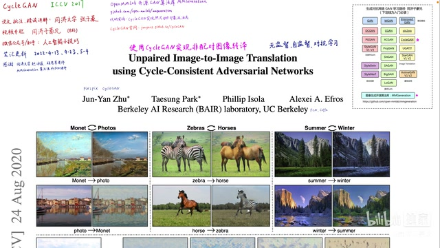
00:00:00–00:00:22 · 画面 001大家好,我是同济子豪兄这期视频讲讲大名鼎鼎的图像生成算法 CycleGAN 的论文精读和算法精讲下一讲视频我会带大家手把手用 OpenMMLab 开源图像生成工具箱 MMGeneration 用自己的数据集训练一个自己的 CycleGAN 实现 CycleGAN 论文中的标志性效果手机照片转莫奈印象派油画
00:00:22–00:00:56 · 画面 002
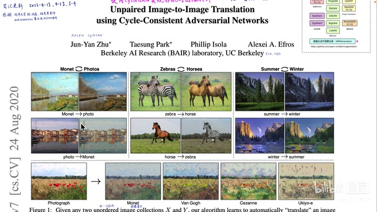
00:00:22–00:00:56 · 画面 002你也可以反过来输入印象派油画生成照片你也可以换成自己的数据集实现任意两个非配对图像域的迁移你只需要给它提供大量的真实手机拍的风景照再给它提供大量莫奈的印象派油画它就可以自动的把照片转成油画或者把油画转回照片像一个循环一样所以叫 CycleGAN 那这也是生成对抗网络 GAN 这个领域的必读论文在我精心设计的这个 GAN 学习路径上那 CycleGAN 和 Pix2Pix 是 Image Translation 图像转译领域的必读经典论文那这两篇论文都很重要都有一万多的引用量那这篇论文呢有 18 页虽然很长但是呢
00:00:56–00:00:58 · 画面 003
00:00:56–00:00:58 · 画面 00300:00:58–00:01:02 · 画面 004
00:00:58–00:01:02 · 画面 00400:01:02–00:01:13 · 画面 005
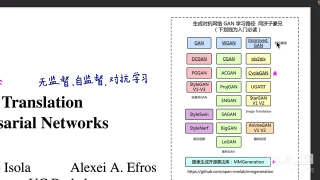
00:01:02–00:01:13 · 画面 00500:01:13–00:01:15 · 画面 006
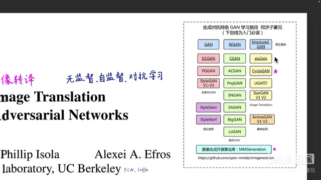
00:01:13–00:01:15 · 画面 00600:01:15–00:01:31 · 画面 007
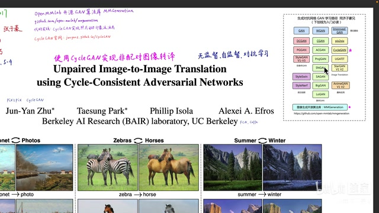
00:01:15–00:01:31 · 画面 007图非常的多,而且图都是艺术画作和风景照片,非常的赏心悦目,论文写的也非常的容易理解。而且 Pix2Pix 和 PsychoGun 的作者是同一个人,他们是来自同一个团队,很多套路都是一样的。在我读了这么多篇论文中,有几篇论文是让我拍案叫绝的,比如说 CAM 可解释性可视化,再比如说 Pix2Pix。
00:01:31–00:01:35 · 画面 008
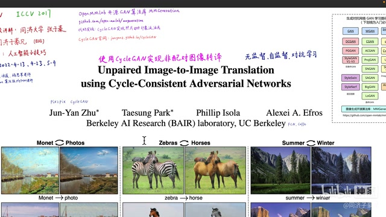
00:01:31–00:01:35 · 画面 00800:01:35–00:03:14 · 画面 009
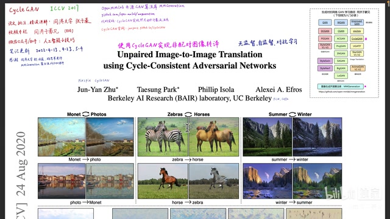
00:01:35–00:03:14 · 画面 009还有我们今天要讲的 Psycho Gun 这三篇我认为是让我拍案叫绝拍大腿的这种非常好的 idea那我们今天就来看一看这个 PsychoGun 那我是怎么知道这篇论文的呢说来惭愧是 2018 年我刚读研一的时候同济大学艺术传媒学院有一个同学他给我讲的他是一个学美术的学设计的他给我讲这个生成对抗网络提出一个新的算法可以把照片转成油画还可以把油画转回照片可以把斑马转成野马也可以把野马转成斑马我当时说我以为他是个名科嘛因为是艺术生我说这个东西没有你说的那么神吧人工智能还没有强大到那种程度吧直到今天我看了这个 CycleGAN 的论文当年这位同学真的是非常的有前瞻性而且我身边很多同学做毕业设计特别是文科生艺术生设计专业的学生毕业设计用 CycleGAN 用的特别多
所以我就在想我做一个 CycleGun 的论文金奖帮助这类同学像我一样的跨专业研究人工智能同学写论文也好作弊社也好组会汇报也好帮助你减少痛苦减少看论文的痛苦和学这个东西的门槛节省你的时间精力那这篇论文写的是真的很不错而且呢这个论文还有一个网站这个网站
00:03:14–00:03:15 · 画面 010
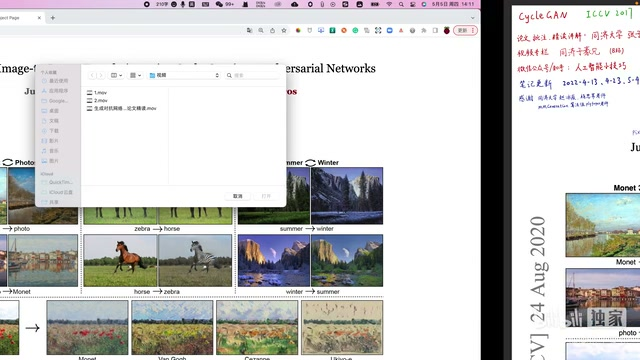
00:03:14–00:03:15 · 画面 01000:03:15–00:03:16 · 画面 011
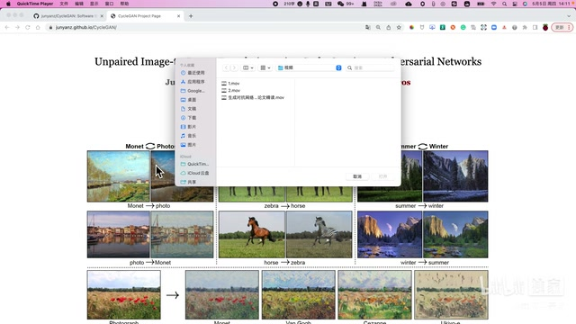
00:03:15–00:03:16 · 画面 01100:03:16–00:03:20 · 画面 012
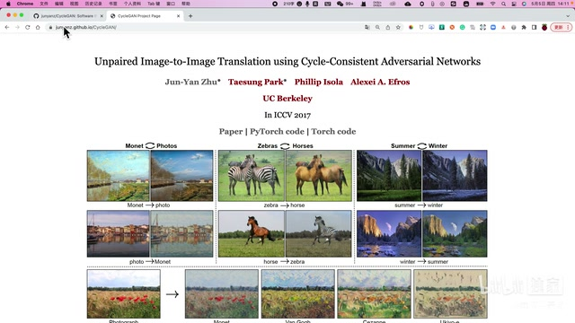
00:03:16–00:03:20 · 画面 012链接在这里你可以直接点击这个网站看看它有各种各样的效果而且它的代码全部开源写的也很不错这又是一篇好论文的特点它论文行文非常好插图画的非常优美然后网站做的也很好然后各种效果各种应用都非常的酷炫同时开源代码和社区各种框架的实现还有鼎会的这个汇报做的都很好
00:03:20–00:03:24 · 画面 013
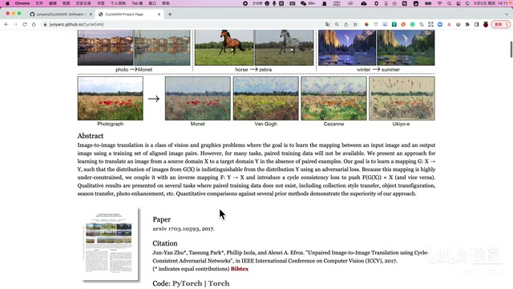
00:03:20–00:03:24 · 画面 01300:03:24–00:03:32 · 画面 014
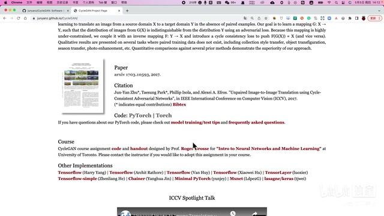
00:03:24–00:03:32 · 画面 01400:03:32–00:03:35 · 画面 015
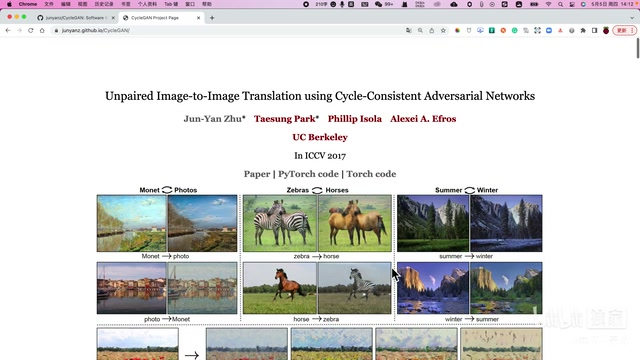
00:03:32–00:03:35 · 画面 01500:03:35–00:03:38 · 画面 016
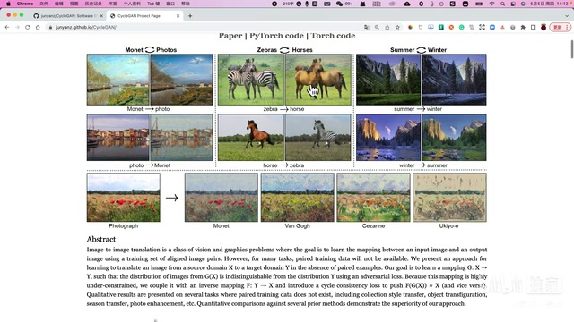
00:03:35–00:03:38 · 画面 01600:03:38–00:03:42 · 画面 017
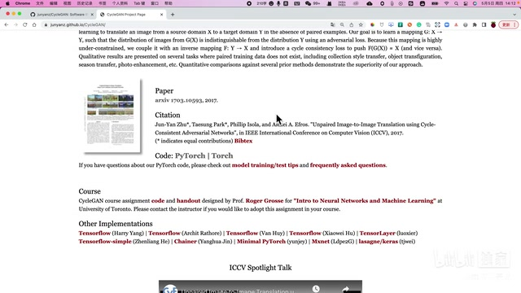
00:03:38–00:03:42 · 画面 01700:03:42–00:03:43 · 画面 018
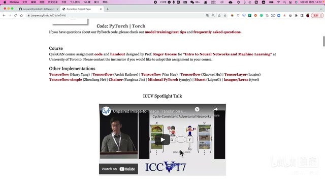
00:03:42–00:03:43 · 画面 01800:03:43–00:03:44 · 画面 019
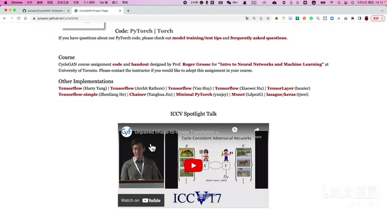
00:03:43–00:03:44 · 画面 01900:03:44–00:03:45 · 画面 020
00:03:44–00:03:45 · 画面 02000:03:45–00:03:49 · 画面 021
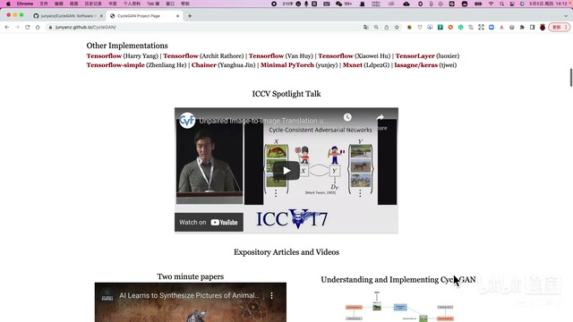
00:03:45–00:03:49 · 画面 021这位就是朱俊彦,PsychoGun 的作者,毕业于清华,后来去了伯克利,现在在卡奈基梅隆大学 CMU 做助理教授。
00:03:49–00:04:40 · 画面 022
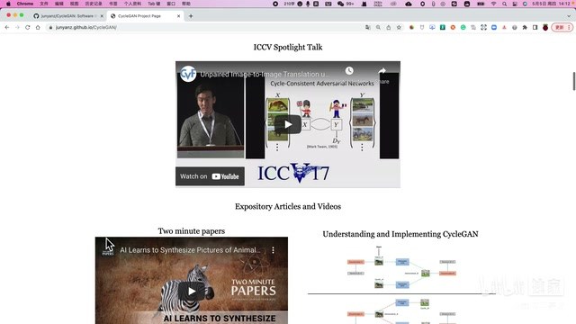
00:03:49–00:04:40 · 画面 022这又是站在科技和人文的十字路口,大家知道我是乔布斯的小迷弟,乔布斯有一页著名的 PPT 就是苹果公司站在科技和人文的十字路口。那今天我们要讲的 PsychoGun,这种艺术图像生成,也是站在科技和人文的十字路口。那如果你既是一个艺术生,又学会了 PsychoGun,你就可以打造一个多维的个人核心竞争力,你就把别人降维打击了。
因为艺术生里面很少有人懂生成对抗网络,懂编程,懂算法,懂深度学习,懂人工智能。那懂人工智能的程序员里面呢,又很少有人懂艺术创作。所以这两个维度一结合就变成了一个多维核心竞争力。那别人就没法取代你了,也没有人给你内卷了。
00:04:40–00:04:43 · 画面 023
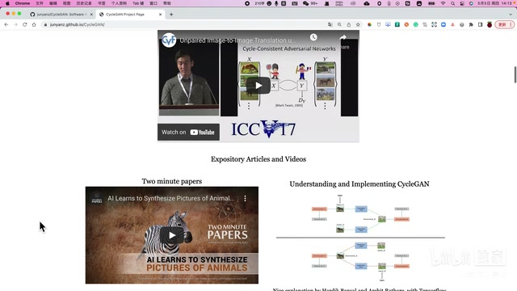
00:04:40–00:04:43 · 画面 023那我们来看一下这个网站吧。那这是,这篇论文发表在 ICCV 的 2017,ICCV 是一个顶级的计算机视觉的学术会议。
00:04:43–00:04:47 · 画面 024
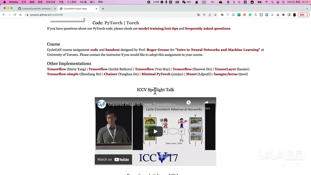
00:04:43–00:04:47 · 画面 02400:04:47–00:05:26 · 画面 025
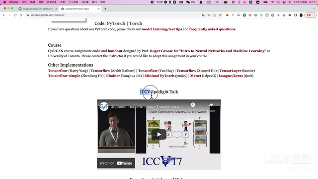
00:04:47–00:05:26 · 画面 025那 2017 年,这一年的 ICCV 可以称得上是神仙打架。ICCV 的最佳论文 Mask RCNN 何恺明大佬团队做的至今都是被广为引用的算法 ICCV2017 的最佳学生论文 Focal Loss 也就是 RetinaNet 目标检测算法也是何恺明大神他们团队做的所以你看何恺明 2016 年刚得了 CVPR 的最佳论文 ResNet 2017 年又在 ICCV 得了最佳论文所以真的是神一样的存在那这是
00:05:26–00:05:28 · 画面 026
00:05:26–00:05:28 · 画面 026Psycho Gun 在 ICC2017 年的这个汇报大家有空的话可以看一看我们这里就不过多讲了因为一会儿我在论文里边都会详细的讲解那还有很多人做了这种两分钟读论文的这样的节目就像抖音里边解说电影解说电视剧一样我个人不太喜欢这种快餐式的读论文我喜欢死磕我喜欢逐字逐句结硬在打呆仗的
00:05:28–00:05:29 · 画面 027
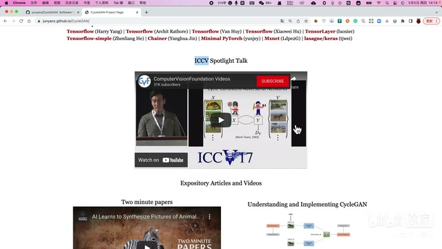
00:05:28–00:05:29 · 画面 02700:05:29–00:05:31 · 画面 028
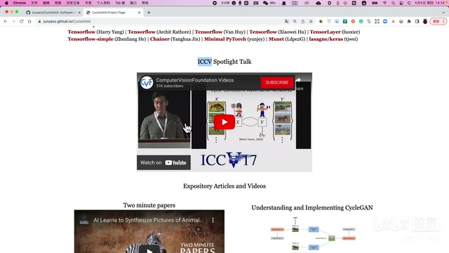
00:05:29–00:05:31 · 画面 02800:05:31–00:05:35 · 画面 029
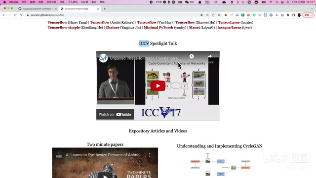
00:05:31–00:05:35 · 画面 02900:05:35–00:05:40 · 画面 030
00:05:35–00:05:40 · 画面 03000:05:40–00:05:42 · 画面 031
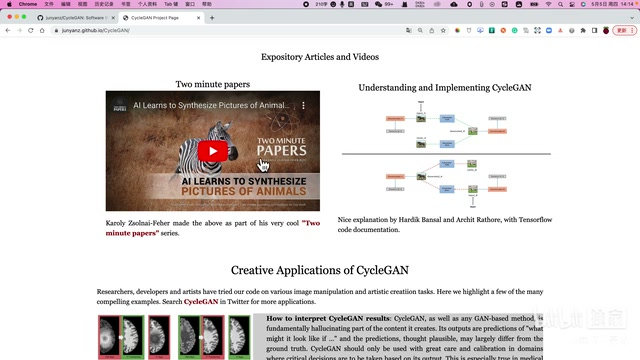
00:05:40–00:05:42 · 画面 03100:05:42–00:05:58 · 画面 032
00:05:42–00:05:58 · 画面 032阅读方式学习方式我不喜欢跳读扫读但是如果你着急的话你要写这个文献综述的话可以看一下那 CycleGun 还可以用于医学比如说把这个核磁共振的影像转成 CT 影像那看看别人用 CycleGun 做的啥这是把莫奈的印象派油画转成了另外一个画家的风格
00:05:58–00:06:00 · 画面 033
00:05:58–00:06:00 · 画面 03300:06:00–00:06:03 · 画面 034
00:06:00–00:06:03 · 画面 03400:06:03–00:06:11 · 画面 035
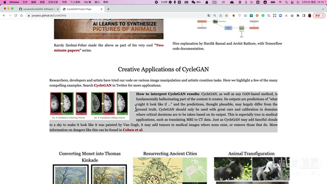
00:06:03–00:06:11 · 画面 03500:06:11–00:06:13 · 画面 036
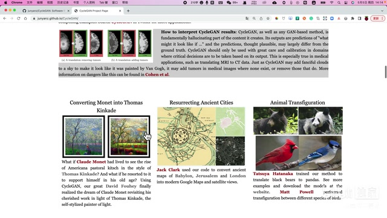
00:06:11–00:06:13 · 画面 03600:06:13–00:06:48 · 画面 037
00:06:13–00:06:48 · 画面 037转成了 David Forhey 这样的一个风格这个画出来很奇幻还可以把古代的城市的地图的这种真实的鸟看图给它还原出来它分别修复了古巴比伦古耶路撒冷和古伦敦就是你给它输入一个地图地图是古人就画出来的哪是河流哪是湖泊哪是城墙哪是建筑物那么把它转成真实无人机或者卫星拍摄到的这样的画面的这个图像域还可以把熊转成熊猫把红鸟转成黄鸟那把人脸转成娃娃脸这好像是权力的游戏里边的一个角色
00:06:48–00:06:49 · 画面 038
00:06:48–00:06:49 · 画面 03800:06:49–00:06:57 · 画面 039
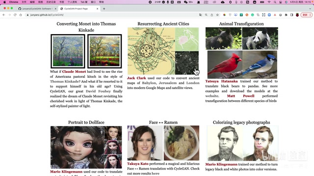
00:06:49–00:06:57 · 画面 03900:06:57–00:07:00 · 画面 040
00:06:57–00:07:00 · 画面 04000:07:00–00:07:03 · 画面 041
00:07:00–00:07:03 · 画面 04100:07:03–00:07:29 · 画面 042
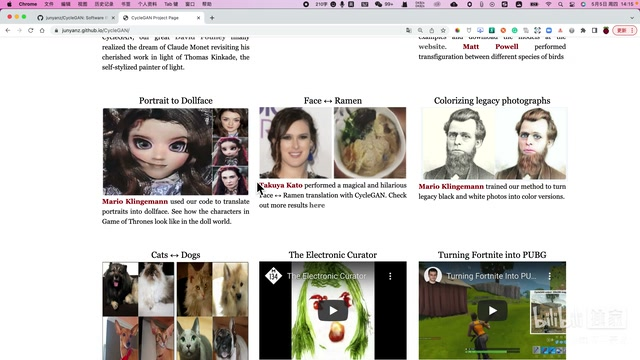
00:07:03–00:07:29 · 画面 042这个也很有意思把人脸转成拉面你看这是一碗拉面这里边有鸡蛋有菜有面条那么摆出来这个样子就和人脸是能对应上的你可以把人脸转成拉面狱的图像还可以把黑白图片转成彩色图片把狗转成猫把猫转成狗你看这是狗这是猫
00:07:29–00:07:30 · 画面 043
00:07:29–00:07:30 · 画面 04300:07:30–00:07:37 · 画面 044
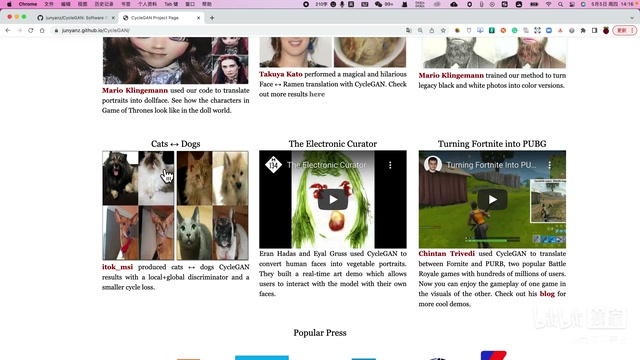
00:07:30–00:07:37 · 画面 044转得很完美人眼都分不清还有一个是把人脸转成蔬菜脸这是拉面这是蔬菜这也是一个很不错的交互艺术的案例这个也很有意思这是把游戏的画面的画风进行了转换把堡垒之夜这个游戏转成了吃鸡这个游戏
00:07:37–00:07:38 · 画面 045
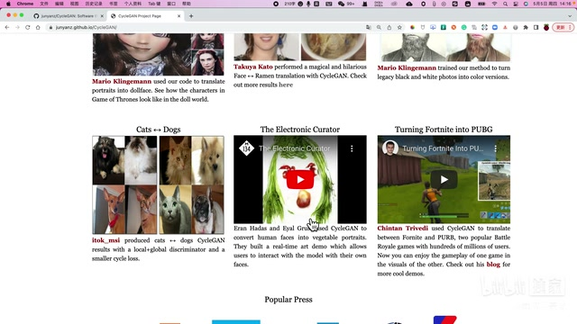
00:07:37–00:07:38 · 画面 04500:07:38–00:07:42 · 画面 046
00:07:38–00:07:42 · 画面 04600:07:42–00:07:45 · 画面 047
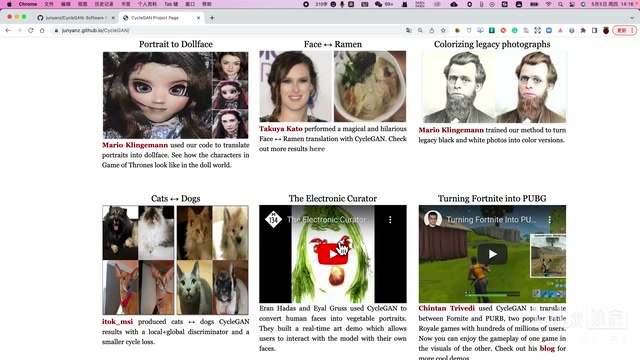
00:07:42–00:07:45 · 画面 04700:07:45–00:07:46 · 画面 048
00:07:45–00:07:46 · 画面 04800:07:46–00:07:48 · 画面 049
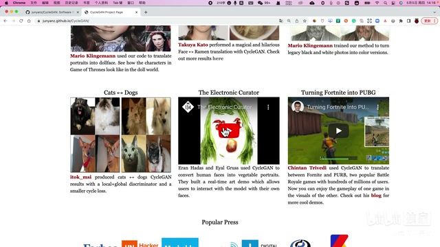
00:07:46–00:07:48 · 画面 04900:07:48–00:08:14 · 画面 050
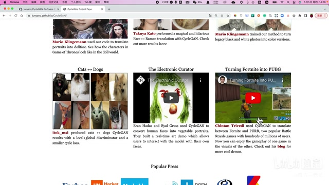
00:07:48–00:08:14 · 画面 050你也可以自己做一个用我们下一期视频要讲的代码你可以把塞尔达传说荒野之息的画面转成原神的画面那么你就有可能同时得罪这两个游戏的玩家我觉得这两个游戏做的还是都挺不错的这是把油画转成照片
00:08:14–00:08:18 · 画面 051
00:08:14–00:08:18 · 画面 05100:08:18–00:08:20 · 画面 052
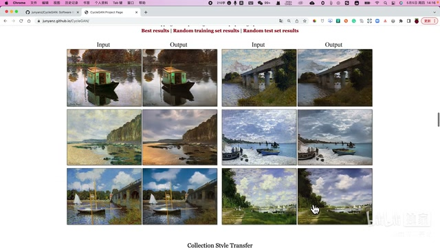
00:08:18–00:08:20 · 画面 05200:08:20–00:08:23 · 画面 053
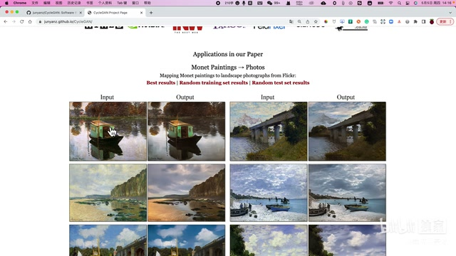
00:08:20–00:08:23 · 画面 05300:08:23–00:08:25 · 画面 054
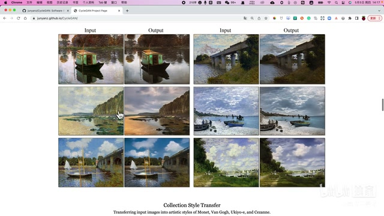
00:08:23–00:08:25 · 画面 054油画是一个图像域照片是一个图像域那么它可以实现这两个图像域的迁移就仿佛是这是画家他画出来的画而这呢就是画家肉眼看到的画面可以这么理解你也可以把任何一个照片转成不同的画家的风格这是莫奈的风格印象派莫奈画过一个著名的日出印象这一幅作品
00:08:25–00:08:31 · 画面 055
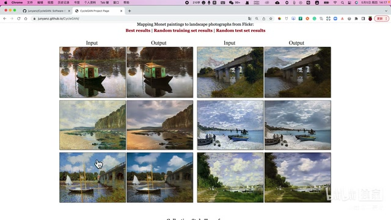
00:08:25–00:08:31 · 画面 05500:08:31–00:08:33 · 画面 056
00:08:31–00:08:33 · 画面 05600:08:33–00:08:36 · 画面 057
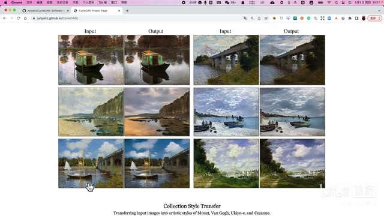
00:08:33–00:08:36 · 画面 05700:08:36–00:08:37 · 画面 058
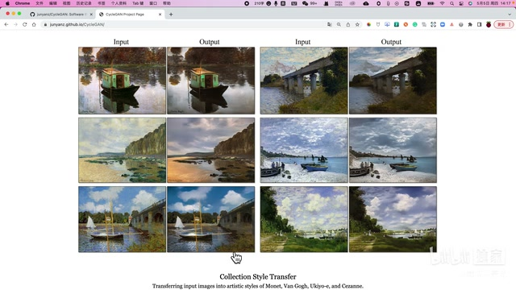
00:08:36–00:08:37 · 画面 05800:08:37–00:08:41 · 画面 059
00:08:37–00:08:41 · 画面 05900:08:41–00:08:42 · 画面 060
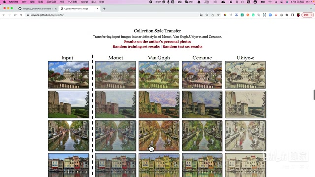
00:08:41–00:08:42 · 画面 06000:08:42–00:08:43 · 画面 061
00:08:42–00:08:43 · 画面 06100:08:43–00:08:44 · 画面 062
00:08:43–00:08:44 · 画面 06200:08:44–00:08:59 · 画面 063
00:08:44–00:08:59 · 画面 063他的画被称作为印象派还有梵高的画把这张图转成梵高画的风格就是这样的梵高他比较喜欢用橙色像向日葵啊稻田啊都是橙色的所以他画出来这个迁移出来的效果就是橙色比较多这个是塞尚的风格还有日本的浮世绘风格
00:08:59–00:09:00 · 画面 064
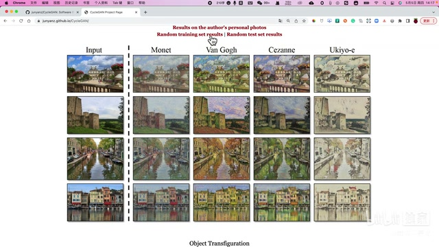
00:08:59–00:09:00 · 画面 06400:09:00–00:09:07 · 画面 065
00:09:00–00:09:07 · 画面 06500:09:07–00:09:08 · 画面 066
00:09:07–00:09:08 · 画面 06600:09:08–00:09:09 · 画面 067
00:09:08–00:09:09 · 画面 06700:09:09–00:09:11 · 画面 068
00:09:09–00:09:11 · 画面 06800:09:11–00:10:12 · 画面 069
00:09:11–00:10:12 · 画面 069注意这里的风格迁移是把整个画家的风格迁移到生成的图像上了而不是某一幅画作他不是把日出印象或者梵高的星空这一幅画的风格迁移到原图上而是把整个莫奈的风格梵高的风格把整个画家的特征和信息加入在里面它是用整个画家的所有作品去训练的而不是只用一个一幅画作去训练这是和我们之前讲的神经网络风格迁移非常大的不一样的地方而且之前我们讲的神经网络风格迁移是直接优化图像优化的是像素微调每一个像素使得它满足既有风格又有内容而现在是我们直接训练了一个神经网络输入一张图马上就能生成另外一张图不是优化图像而是训练网络训练模型这是两个区别一会我们会讲还有就是物体变形码转成斑码斑码转成码效果是非常的牛的
00:10:12–00:10:14 · 画面 070
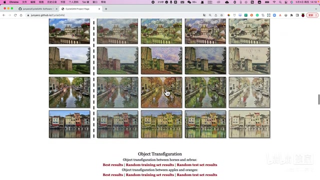
00:10:12–00:10:14 · 画面 07000:10:14–00:10:23 · 画面 071
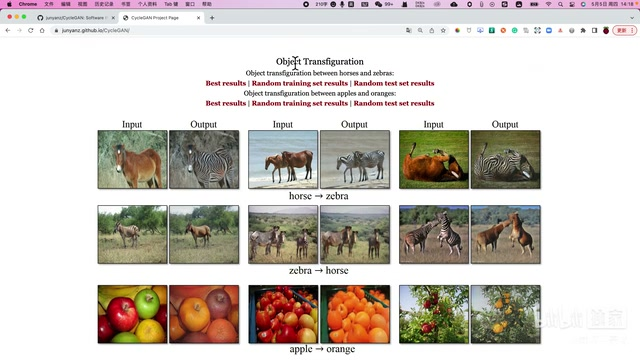
00:10:14–00:10:23 · 画面 071一会我们会看一个视频就是一个斑马在跑还可以把苹果转成橘子橘子转成苹果你看这是效果非常逼真的他能够把苹果表面的纹理他知道苹果表面要有这样的纹理而橘子表面是这样的纹理他都能够学出来当然这里有个小瑕疵就是苹果的瓣还留着
00:10:23–00:10:24 · 画面 072
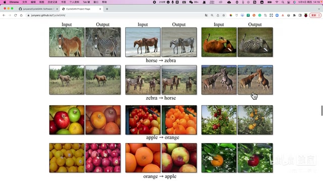
00:10:23–00:10:24 · 画面 07200:10:24–00:10:25 · 画面 073
00:10:24–00:10:25 · 画面 07300:10:25–00:10:27 · 画面 074
00:10:25–00:10:27 · 画面 07400:10:27–00:10:46 · 画面 075
00:10:27–00:10:46 · 画面 07500:10:46–00:10:48 · 画面 076
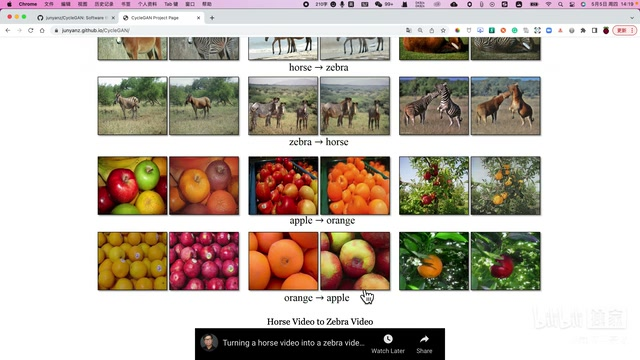
00:10:46–00:10:48 · 画面 076我们来看一下这个视频
00:10:48–00:10:52 · 画面 077
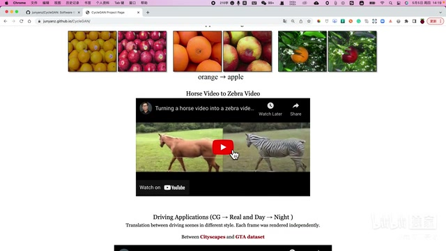
00:10:48–00:10:52 · 画面 077这个视频我在 2018 年就看过这个视频当时就非常的惊艳
00:10:52–00:10:56 · 画面 078
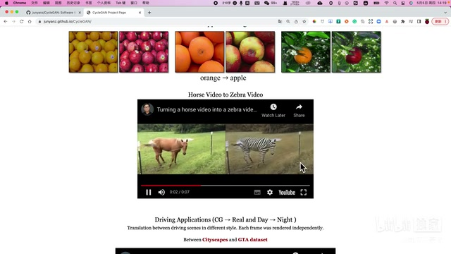
00:10:52–00:10:56 · 画面 078当时各大公众号都
00:10:56–00:11:00 · 画面 079
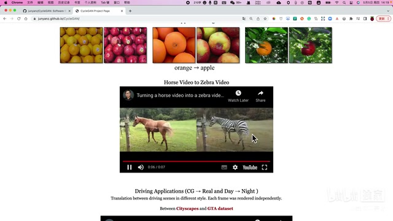
00:10:56–00:11:00 · 画面 079都汇报了这个都展示出了这个视频
00:11:00–00:11:04 · 画面 080
00:11:00–00:11:04 · 画面 080那左边是原始的视频是一匹野马
00:11:04–00:11:18 · 画面 081
00:11:04–00:11:18 · 画面 081右边是它 CycleGun 转成斑马的效果那它只把画面中的马的条纹进行了转换它没有把背景的草原变成斑马条纹它只把马的区域变成了斑马条纹所以这是非常惊艳的
00:11:18–00:11:20 · 画面 082
00:11:18–00:11:20 · 画面 082那还有一个应用就是
00:11:20–00:11:24 · 画面 083
00:11:20–00:11:24 · 画面 083把白天黑夜做迁移
00:11:24–00:11:28 · 画面 084
00:11:24–00:11:28 · 画面 084或者把街景和 GTA这个游戏的画面进行迁移
00:11:28–00:11:32 · 画面 085
00:11:28–00:11:32 · 画面 085这也是两种图像域
00:11:32–00:11:36 · 画面 086
00:11:32–00:11:36 · 画面 086就像我们刚刚讲的这个游戏的画面迁移一样
00:11:36–00:11:40 · 画面 087
00:11:36–00:11:40 · 画面 087它是两种图像域可以无缝的转换
00:11:40–00:11:43 · 画面 088
00:11:40–00:11:43 · 画面 08800:11:43–00:11:47 · 画面 089
00:11:43–00:11:47 · 画面 089这个是把把白天和黑夜进行了转换
00:11:47–00:11:51 · 画面 090
00:11:47–00:11:51 · 画面 090同一段视频你既可以
00:11:51–00:11:55 · 画面 091
00:11:51–00:11:55 · 画面 091它原来是白天你也可以把它转成黑夜
00:11:55–00:11:59 · 画面 092
00:11:55–00:11:59 · 画面 092效果是非常惊艳那它这还有个 GTA 游戏数据集这个 18 个 G 里面的数据集里都是 GTA 的游戏截图那你就可以把真实的接近图像这个数据集和 GTA 游戏图像的数据集输入到 CycleGAN 里面作为两个图像域让 CycleGAN 学习到如何把这个图像域的照片变成另外一个域也可以把另外一个域的照片变回这个域
00:11:59–00:12:27 · 画面 093
00:11:59–00:12:27 · 画面 09300:12:27–00:12:28 · 画面 094
00:12:27–00:12:28 · 画面 094刚刚我提到的这个堡垒之夜转成吃鸡那么就是用这样的技术实现的它可以实现任意两个非配对图像域的迁移你不需要是同一个场景的两个域你只需要分别把两个域的图片输入进去不用保证是同一个场景不用保证像素层面上是一一对齐的
00:12:28–00:12:33 · 画面 095
00:12:28–00:12:33 · 画面 09500:12:33–00:12:34 · 画面 096
00:12:33–00:12:34 · 画面 09600:12:34–00:12:38 · 画面 097
00:12:34–00:12:38 · 画面 09700:12:38–00:12:39 · 画面 098
00:12:38–00:12:39 · 画面 09800:12:39–00:12:49 · 画面 099
00:12:39–00:12:49 · 画面 09900:12:49–00:12:50 · 画面 100
00:12:49–00:12:50 · 画面 100还有一些应用我也觉得这个非常神奇是把美国加州一个叫优胜美丽的国家公园的季节进行迁移这是冬天的画这是冬天的照片然后转成夏天夏天转成冬天你看这个树绿色就没了然后白雪变得更多了这是把冬天转成夏天冬天转成夏天山上的雪就化了然后下面的树也绿了
00:12:50–00:12:52 · 画面 101
00:12:50–00:12:52 · 画面 10100:12:52–00:13:18 · 画面 102
00:12:52–00:13:18 · 画面 10200:13:18–00:13:21 · 画面 103
00:13:18–00:13:21 · 画面 103邮程美的国家公园苹果每年 9 月份开发布会发布新 iPhone 很多的风景照就是在国家公园拍的还可以进行照片的增强比如说我输入一张手机拍的这种小光圈的全景的图片它就可以帮我增强成这种
00:13:21–00:13:30 · 画面 104
00:13:21–00:13:30 · 画面 10400:13:30–00:13:32 · 画面 105
00:13:30–00:13:32 · 画面 10500:13:32–00:13:41 · 画面 106
00:13:32–00:13:41 · 画面 10600:13:41–00:13:43 · 画面 107
00:13:41–00:13:43 · 画面 10700:13:43–00:13:44 · 画面 108
00:13:43–00:13:44 · 画面 10800:13:44–00:13:45 · 画面 109
00:13:44–00:13:45 · 画面 109前景然后背景虚化的大光圈的图片就仿佛是仿佛是单反数码照相机拍的哎呦没了那这里他们并没有真正的切换拍照的设备而是把手机拍的画输入给 CycleGun 然后再把大光圈背景虚化只保留前景的图片输入给 CycleGun 作为这两个图像域来进行迁移
00:13:45–00:13:48 · 画面 110
00:13:45–00:13:48 · 画面 11000:13:48–00:13:49 · 画面 111
00:13:48–00:13:49 · 画面 11100:13:49–00:13:52 · 画面 112
00:13:49–00:13:52 · 画面 11200:13:52–00:13:54 · 画面 113
00:13:52–00:13:54 · 画面 11300:13:54–00:13:58 · 画面 114
00:13:54–00:13:58 · 画面 11400:13:58–00:14:00 · 画面 115
00:13:58–00:14:00 · 画面 11500:14:00–00:14:03 · 画面 116
00:14:00–00:14:03 · 画面 11600:14:03–00:14:06 · 画面 117
00:14:03–00:14:06 · 画面 11700:14:06–00:14:18 · 画面 118
00:14:06–00:14:18 · 画面 11800:14:18–00:14:19 · 画面 119
00:14:18–00:14:19 · 画面 119这里他出现了一些小 bug 在论文里边也有这张图就是训练集中并没有人骑在马上的图片但是呢他仍然学习到了跟马相关的所有物体的花纹都要转成斑马所以这就会产生这样的奇幻效果那作者为了调侃这个效果做了一个打招呼的视频这是 PsychoGun 的作者
00:14:19–00:14:20 · 画面 120
00:14:19–00:14:20 · 画面 12000:14:20–00:14:23 · 画面 121
00:14:20–00:14:23 · 画面 12100:14:23–00:14:39 · 画面 122
00:14:23–00:14:39 · 画面 12200:14:39–00:14:43 · 画面 123
00:14:39–00:14:43 · 画面 12300:14:43–00:14:46 · 画面 124
00:14:43–00:14:46 · 画面 12400:14:46–00:14:49 · 画面 125
00:14:46–00:14:49 · 画面 12500:14:49–00:14:56 · 画面 126
00:14:49–00:14:56 · 画面 126这是 CycleGun 的一些小小的瑕疵那为什么会有这个瑕疵呢那如何改进它呢一会我们在论文里边会详细的介绍那么你看它未来的工作相关的工作还有致谢都在这个网站里我强烈建议你看一下这个网站特别是这些里边一个一个的应用像这个游戏画面前你自己也可以做出类似的应用
00:14:56–00:14:59 · 画面 127
00:14:56–00:14:59 · 画面 12700:14:59–00:15:02 · 画面 128
00:14:59–00:15:02 · 画面 12800:15:02–00:15:06 · 画面 129
00:15:02–00:15:06 · 画面 12900:15:06–00:15:10 · 画面 130
00:15:06–00:15:10 · 画面 13000:15:10–00:15:11 · 画面 131
00:15:10–00:15:11 · 画面 13100:15:11–00:15:15 · 画面 132
00:15:11–00:15:15 · 画面 132非常的有意思如果你看不管你是做城市规划的古建筑修复的数字艺术设计的还是这种实时数字交互还有搞游戏都可以都得学采口感学了采口感之后都能做出很棒的应用
00:15:15–00:15:16 · 画面 133
00:15:15–00:15:16 · 画面 13300:15:16–00:15:20 · 画面 134
00:15:16–00:15:20 · 画面 13400:15:20–00:15:24 · 画面 135
00:15:20–00:15:24 · 画面 13500:15:24–00:15:25 · 画面 136
00:15:24–00:15:25 · 画面 13600:15:25–00:15:28 · 画面 137
00:15:25–00:15:28 · 画面 13700:15:28–00:15:29 · 画面 138
00:15:28–00:15:29 · 画面 13800:15:29–00:15:33 · 画面 139
00:15:29–00:15:33 · 画面 13900:15:33–00:15:36 · 画面 140
00:15:33–00:15:36 · 画面 140那我们现在就来看论文吧那不管是 Pix2Pix 也好 CycleGun 也好那他的论文的一大特点就是上来先不是写文章而是放一堆效果图我觉得这种写法是非常值得我们借鉴的就是人类他是视觉动物人类喜欢看图看视频看短视频这是比较符合我们人类认知的人类不喜欢看文字不喜欢看数字不喜欢看字母更不喜欢看公式所以
00:15:36–00:15:41 · 画面 141
00:15:36–00:15:41 · 画面 14100:15:41–00:15:42 · 画面 142
00:15:41–00:15:42 · 画面 14200:15:42–00:16:21 · 画面 143
00:15:42–00:16:21 · 画面 143我们以后写论文也要把一些非常惊艳的那种让人哇哦的那种图像放在第一页特别是像这种站在科技和人文的十字路口你得让两边的人都能看懂那 CycleGun 其实非常的简单这个 18 页的论文说来说去其实就是这张图
00:16:21–00:16:25 · 画面 144
00:16:21–00:16:25 · 画面 14400:16:25–00:16:29 · 画面 145
00:16:25–00:16:29 · 画面 145那我这里先介绍一下它的核心算法吧让你心中有数一会我们读论文的时候其实非常的轻松愉快那 X 是莫奈印象派的油画比如说我把莫奈这一辈子画的几百张图像把它放到一个文件夹里
00:16:29–00:18:29 · 画面 146
00:16:29–00:18:29 · 画面 146那么这个文件夹就叫做 X 这是莫奈印象派油画的图像域我再把我自己拍的手机拍的风景照比如说我在南京拍的在重庆拍的在同济大学拍的风景照放到一个文件夹里作为图像域 Y 然后我训练两对生成对抗网络就是两个生成对抗网络第一个生成对抗网络是一个 G 生成器和一个 DY 判别器那 G 生成器呢尝试把 X 输入 X 图像转成 Y 图像域的图像而 DY 判别器呢努力的判别这个图像到底是来自真正的 Y 还是 G 生成出来的 Y 那这是一个生成对抗网络那么他俩训练出的结果就是能够把 X 的图片变成 Y 图片把 X 域的图片变成 Y 域的图片而这张图片无法让 DY 区分这是我们上一期讲干开山之作论文精读的时候讲到的算法如果你这块不懂的话可以去看一下那期视频我还做了一个干 Lab 的交互式可视化的介绍
这是一个生成对抗网络那么它的作用就是让 G 生成以假乱真的外图像域的图像使得地外无法判别那么这张 G 生成的外域的图像足够的逼真那么 G 是输入 X 输出外域的图像而这个外域的图像非常像外本身这个图像域的图像
00:18:29–00:20:29 · 画面 147
00:18:29–00:20:29 · 画面 147这是第一个生成对抗网络那么第二个生成对抗网络是 F 生成器和 DX 判别器那么它干的事情恰恰相反 F 是要输入外域的图像生成 X 域的图像而这个 X 域的图像足够逼真无法让 DX 判别器来判别真假 DX 判别器的作用就是要区分这张图像到底是 F 生成的假 X 还是真的 X是真的莫奈印象派的油画还是 F 从手机拍的风景照转成的莫奈生成的油画这个生成的莫奈的像莫奈的油画那最后训练 F 和 DX 的结果就是它可以输入手机拍的风景照生成一张很像莫奈印象派油画的假图像这就是 cycle gun 你看它像一个循环一样像打太极一样那么它既可以实现油画转风景照也可以实现风景照转油画那这里边有一个核心的损失函数叫做 cycle consistency 循环一致性损失那按理说我们直接训练这两个生成对抗网络不就可以了吗这里边存在一个问题
那就是我一会会说的一个叫思密达的问题，这个思密达问题是我自己想出来的一个概念，我一会会解释。那有可能这个 X 它这个 G 它输入 X 生成的 Y，那它确实非常像风景照，但是它有可能只是像风景照而已，它并没有包含 X 的信息。那这个时候呢，我得让这个它生成的这个外域的假图像再用 F 转回 X使得这个原来的 X 和转回来的 X 越来越近，那这样才能使得这个 Y 生成的假图像尽可能包含更多的原始图像的信息。那就是一张莫奈印象派的油画，我让生成器 G 去生成一张假图像，那么这个红点就是假图像 Y 域的假图像，我再把这个假图像输入给 F，让它把这张假图像转回到 X 域
00:20:29–00:22:16 · 画面 148
00:20:29–00:22:16 · 画面 148那我构建一个循环一致性损失，我让这两个蓝点尽可能的接近，那这样它这个模型就收敛了，就不会出现我一会儿要说的思密达现象，不会出现它生成一张虽然很像风景照但是不包含原来莫奈一象派油画的信息。比如说莫奈画的是一个港口，那么它可能生成的是一个树林那这样的话再用 F 把它转回回 X 域，那它俩就对不上了。所以这个损失函数就倒逼着这个网络，你必须在 X 转 Y 的时候给我保证保留一些 X 的信息。人家莫奈画的是港口，你就得给我生成港口的风景照；莫奈画的是树林，你就得给我生成树林的风景照。否则你再用 F 给它转回来的时候，它俩就对不上了。那么这是
x 到 yy 再回 x，那它俩要构建一个循环一致性损失。那反过来呢，y 转到 x，那这是通过F 实现的。那么 X 再转回到 Y 是通过 G 实现的，那么它俩也得足够的接近，这也是一个循环一致性损失。那么 Y 通过 F 转成 XX 再通过 G 转成 Y，那么它俩得尽可能的接近。那么这是第二个循环一致性损失函数。所以 CycleGAN 的核心算法就是这么简单，有两个 GAN 再加上两个循环一致性损失，这就是 CycleGAN你已经把这篇论文完全的读懂了，其他的只不过是艺术欣赏而已。我们来看看这篇论文里边赏心悦目的图像。那在下一讲呢，我们会用这个 MM Generation 来实现手机照片转印象派油画这么一个案例，它俩可以互转
00:22:16–00:22:20 · 画面 149
00:22:16–00:22:20 · 画面 14900:22:20–00:22:24 · 画面 150
00:22:20–00:22:24 · 画面 15000:22:24–00:22:26 · 画面 151
00:22:24–00:22:26 · 画面 15100:22:26–00:22:56 · 画面 152
00:22:26–00:22:56 · 画面 152你也可以把数据集换成你自己的数据，就比如说你换成塞尔达传说旷野之息的游戏画面，这是作为第一个域，你也可以用原神的游戏画面作为第二个域来做这两个域的迁移。当然这个数据要在合法合规的情况下获取，我只是举个例子
00:22:56–00:22:59 · 画面 153
00:22:56–00:22:59 · 画面 153讲完了这个 PIX2PIX 和 CycleGAN
00:22:59–00:23:01 · 画面 154
00:22:59–00:23:01 · 画面 154这个 Image Translation其实该读的就已经都读完了
00:23:01–00:23:09 · 画面 155
00:23:01–00:23:09 · 画面 155如果你想后续更进一步学习可以看一下这几篇论文
00:23:09–00:23:10 · 画面 156
00:23:09–00:23:10 · 画面 156这是一个很不错的研究方向
00:23:10–00:24:22 · 画面 157
00:23:10–00:24:22 · 画面 157Image Translation就是把一张图像转成另外一张图像它可以是配对的也可以是不配对的论文的作者来自伯克利 AI 研究院叫 BAIR Facebook AI 研究院叫 FAIR这个团队伯克利在人工智能领域贡献了很多基础设施级别的算法和框架比如说 2015 年的 CVPR 最佳论文 FCN全卷级网络是深度学习图像分割领域的开山之作我们也会做论文精读应该就在图像分割的第一篇就会讲 FCN还有就是 Caffe 这个框架是我们的第一篇是我们中国人做的卡菲这个框架在深度学习刚爆发的那几年发挥了重要的作用虽然现在已经逐渐被 PyTorch 取代了它的开源社区也都变成 PyTorch 的社区了但是卡菲在当年特别是 AlexNet VGG 那个时候非常的重要相当于是在人工智能刚爆发那几年扮演了非常重要的基础作用这是莫奈转照片也可以照片转莫奈
00:24:22–00:24:23 · 画面 158
00:24:22–00:24:23 · 画面 15800:24:23–00:24:32 · 画面 159
00:24:23–00:24:32 · 画面 159斑马转野马野马转斑马夏天转冬天冬天转夏天然后一张图像可以转成很多个画家的风格就是说你可以给 CycleGun 两个完全不同的图像域这个图像和图像之间不需要一一对应不需要是在同一个场景的两个域你随便给它给两个域的图片就可以了
00:24:32–00:24:37 · 画面 160
00:24:32–00:24:37 · 画面 16000:24:37–00:24:39 · 画面 161
00:24:37–00:24:39 · 画面 16100:24:39–00:24:40 · 画面 162
00:24:39–00:24:40 · 画面 16200:24:40–00:25:13 · 画面 163
00:24:40–00:25:13 · 画面 163PsychoGun 就可以自动的学习到如何把一个图像域转成另外一个图像域或者反之亦然你把 B 域转成 A 域把 Y 域转成 X 域也是可以的那这个莫奈的照片和这个风景照来自 Flicker 这个图像网站很多做人工智能的数据集都是从 Flicker 上爬取的然后斑马和野马是来自 ImageNet 然后这个季节变换是从优胜美的公园 Flicker 中的优胜美的公园的照片中爬取得到的
00:25:13–00:25:17 · 画面 164
00:25:13–00:25:17 · 画面 16400:25:17–00:25:24 · 画面 165
00:25:17–00:25:24 · 画面 16500:25:24–00:25:26 · 画面 166
00:25:24–00:25:26 · 画面 166那底下是我们分别把这四位画家的画作保存下来作为图像域然后把照片转成各自的图像域
00:25:26–00:25:37 · 画面 167
00:25:26–00:25:37 · 画面 167对应画家的风格好来看摘要这个图像转译任务 image translation 是计算机视觉和计算机图形学的一个问题那它的目标呢是建立一个映射输入一个图像域的图片输出另一个图像域的图片那么在以前的做法呢是这两个数据集要像素级别的一一对齐要一一对应比如说像 pix2pix 线稿转真实照片
00:25:37–00:25:39 · 画面 168
00:25:37–00:25:39 · 画面 16800:25:39–00:25:57 · 画面 169
00:25:39–00:25:57 · 画面 16900:25:57–00:25:59 · 画面 170
00:25:57–00:25:59 · 画面 17000:25:59–00:26:53 · 画面 171
00:25:59–00:26:53 · 画面 171黑白图像转彩色图像或者是谷歌地图转航拍图航拍地图转谷歌地图建筑外立面的设计图转照片照片转外立面的设计图那么它都是在像素级别是一一对应的但是呢很多任务下这个一一对应的数据太难以获得了比如说像画家这个莫奈的画你总不可能我让莫奈现在起来再给我画一张同样的一个地方的画然后我来构建一个像素集一对应的图像对那是不可能的这个采集配对数据难度太大了那我们提出了一个方法就可以解决这个非配对图像域的迁移问题那不需要配对图像那我们的目标是学习一个映射那 G 生成器是从 X 到 Y 那么它的目标是生成的这个 GX 是不可被判别器区分为到底是假图像还是 Y 的真图像那这是一个 GAN 嘛是一个生成对抗网络那因为我如果是只用这个两个 GAN 的话那么它是完全不可控制的就会出现我一会儿要说的思密达现象
00:26:53–00:27:54 · 画面 172
00:26:53–00:27:54 · 画面 172那么所以我们加入了循环一致性损失就是要让它再转回来要有第二个生成器从 Y 转回 X 然后把 X 转到 Y 的假图像再用 F 转回到 X 域然后让这两个构建循环一致性损失让它俩更像然后反之亦然要有两个循环一致性损失这其实就是我刚刚说的一个图定性和定量的结果都表明效果是非常不错的那么在定性的分析上你会发现这些应用都是非配对数据上训练得到的比如说画家风格迁移还有物体变身就是斑马转野马野马转斑马季节变换照片增强那么定量的比较也表明了我们这个算法比其他算法要好
00:27:54–00:27:55 · 画面 173
00:27:54–00:27:55 · 画面 17300:27:55–00:28:15 · 画面 174
00:27:55–00:28:15 · 画面 17400:28:15–00:28:19 · 画面 175
00:28:15–00:28:19 · 画面 175好 那么我们来看 introduction 这个 introduction 写的非常的诗意真的是站在科技和人文的十字路口好 那我来有感情的朗诵一下如果克劳德·莫奈这位印象派画家在 1873 年的一个明媚的春日把他的画架架在了塞纳河畔那么他到底会看到一个什么样的场景呢
00:28:19–00:28:23 · 画面 176
00:28:19–00:28:23 · 画面 17600:28:23–00:30:23 · 画面 177
00:28:23–00:30:23 · 画面 177那如果这张照片真的存在的话就是他当时肉眼看到的场景真实存在的话那么这张照片应该有一个明澈的碧蓝的天空倒映着波光粼粼的小溪莫奈就把他的印象通过他纤细的画笔笔触和明亮的调色板绘制在了画上所以他的画叫做印象派这里边有个小故事莫奈他当年画出了日出印象之后那么这个印象派其实是被当时的学院派古典派打压的他们觉得你这画的是啥玩意儿这个模模糊糊的朦朦胧胧的不像我们古典派文艺复兴时期那些大师精准的构图精准的笔触达芬奇画鸡蛋要经过很久的练习那么黄金分割比例他的构图比例都要非常完美才行结果朦朦胧画出来一个这种画
所以当时的古典派和学院派非常瞧不起朦朦胧非常瞧不起日出印象所以就给他扣了一顶叫印象派的帽子没想到印象派逐渐的被学界接受然后变成了一个画派这个日出印象曾经在博物馆中被偷过1985 年被偷过1990 年才被找回来命途多揣的一幅画第二段如果莫奈就是他穿越到现代了他在一个非常清凉的夏日的夜晚
00:30:23–00:31:11 · 画面 178
00:30:23–00:31:11 · 画面 178种下叶到了这个卡西斯小镇的港口那么让他到现代然后让他再画一幅画他会画成什么样子呢那当然了我们作为一个人我们看过莫奈的画我们稍微去莫奈的画展去溜达一圈我们心里边就有数了莫奈他画画用的是什么样的笔触什么样的风格那么我们就可以想象得到在这个地方莫奈如果画出一幅画的话那么他也许会用蜡笔的点彩会用这个平缓的渐变颜色就是我们人类是可以想象得到任何一个景致莫奈如果画的话他会画成什么样子的
00:31:11–00:31:43 · 画面 179
00:31:11–00:31:43 · 画面 179那虽然我们人类没有配对的数据集莫奈没有真正的画过这幅画但是我们人类仍然可以想象得到莫奈是如何画这幅画的就是我们人类是有先验知识的是知道莫奈画的风格是什么样的然后我们可以脑补出他真正画出来是什么样子的当然这个难度比较大我也不是学画画的我最没有艺术细胞了当然如果真的学画画的同学他是可以实现的
00:31:43–00:31:44 · 画面 180
00:31:43–00:31:44 · 画面 180所以第一段说的是能不能把莫奈的油画转成照片第二段说的是能不能把照片转成莫奈的油画那第三段说的是人是可以实现上面这两个任务的那能不能让人工智能实现呢人类是可以理解风格的区别的好那在这篇论文我们就实现了这个功能那我们把两个图像域来进行了迁移
00:31:44–00:32:01 · 画面 181
00:31:44–00:32:01 · 画面 18100:32:01–00:32:03 · 画面 182
00:32:01–00:32:03 · 画面 18200:32:03–00:32:04 · 画面 183
00:32:03–00:32:04 · 画面 18300:32:04–00:32:07 · 画面 184
00:32:04–00:32:07 · 画面 18400:32:07–00:32:29 · 画面 185
00:32:07–00:32:29 · 画面 185捕捉这两个域各自的特点实现图像转译那么在缺习缺乏配对训练样本的情况下用非配对的数据集实现图像的转译那这个问题呢可以被更广阔的描述为 image to image translation22 号文件就是 pix to pix 那 pix to pix 呢是输入一个 x 把它转成 y 比如说黑白图像转
00:32:29–00:32:30 · 画面 186
00:32:29–00:32:30 · 画面 18600:32:30–00:33:38 · 画面 187
00:32:30–00:33:38 · 画面 187上色彩色图像或者是输入图像转成语义标签这是语义分割问题然后输入线稿输入边缘转成照片比如说你画一个线稿的猫它能真正的把这只猫画出来这个照片画出来像神秘马良一样这是 pix2pix 解决的问题那计算机图形学计算机视觉计算机影像学图像处理研究了这么多年那么已经有非常好的方法来实现这个有标注的图像迁移了所以叫 supervised setting 就是有监督学习就是有标注那么在这种情况下图像是配对的在像素层面一一配对的 XI 和 YI 它俩是一一配对的 X 是一个图像域比如说是线稿 Y 是另外一个图像域比如说图片那么它俩都描述的是同一只猫在像素层面是一一配对的但是呢在这个获取这个配对数据集太难了
00:33:38–00:35:04 · 画面 188
00:33:38–00:35:04 · 画面 188仅仅局限于几种特殊的应用场景比如说语义分割像谷歌地图转航拍这是可以获得一一配对的或者像 pix2pix 那样建立一个网站让大家在上面自己用鼠标去画猫的线稿那样也可以获得一一配对的或者是输入建筑的外立面设计图生成建筑物外立面真正的照片那么这也是可以配对的但是这太难了获得这样的数据太难了而且获得数据量也比较小特别是对于艺术领域你总不能让画家本人再创作一幅就是我现在把莫奈请到同济大学我对着我们图书馆拍张照片让莫奈照这张照片画一张莫奈的画然后用它来作为训练配对图像的训练样本那是不可能的在很多任务里面比如说物体变身像野马和斑马的转换这是不可能获得到配对的数据的你总不能找一头找两头一模一样的
动物它们的姿态它们的外貌完全一样只不过一只是野马一只是斑马这是不可能的它们还得在同一个场景同一个背景摆出同样的 pose 这是不可能的所以我们在想能不能在非配对数据集上来实现图像的迁移任务那我们假设这两个图像域确实它们是存在一些关系的底层的关系的比如说它们都是在同一个底层场景上渲染得到的
00:35:04–00:35:43 · 画面 189
00:35:04–00:35:43 · 画面 189那我们就在尝试找这个关系那虽然没有这种像素级别图像层面一一配对的数据集那我们能不能把它变得更高一个层次呢在数据集或者叫图像域的层次来构建监督学习问题呢就是在数据集层次来给它打标签而不是在单张图像层次给它打标签
00:35:43–00:35:44 · 画面 190
00:35:43–00:35:44 · 画面 190也就是说我们只需要给网络为两个图像域的文件就是 X 域的一大堆图像和 Y 域的一大堆图像我们就可以训练一个训练两个干
00:35:44–00:35:48 · 画面 191
00:35:44–00:35:48 · 画面 19100:35:48–00:35:52 · 画面 192
00:35:48–00:35:52 · 画面 19200:35:52–00:35:54 · 画面 193
00:35:52–00:35:54 · 画面 19300:35:54–00:35:55 · 画面 194
00:35:54–00:35:55 · 画面 19400:35:55–00:36:44 · 画面 195
00:35:55–00:36:44 · 画面 195然后再加上两个 cycle consistency loss 循环一致性损失就可以实现 cycle 干了那我们来看第一个干第一个干是生成器 G 它是把输入 X 转成 Y 的那么转成的这个 Y 域的假图像叫做 GX 那么判别器呢是尝试把 GX 和真正的 Y 做区分那生成器呢在努力欺骗这个判别器那这其实是我们上次课讲的这个生成对抗网络嘛大家可以去看一下我这就不过多赘述了那它的训练结果就是生成器可以真正的拟合到这个图像域底层的分布可以生成以假乱真的图像
00:36:44–00:36:45 · 画面 196
00:36:44–00:36:45 · 画面 196那这里他为了严谨加了一句这个 G 需要随机这是为了从统计学上严谨地说明这个网络的可学性它不是死机硬背它不是固定映射的它不是路径依赖的它是可以随机的这样的在 CycleGAN 里面叫做双射不会产生模式崩溃就是不管你输入啥它都生成同一张图像这是不会的
00:36:45–00:37:22 · 画面 197
00:36:45–00:37:22 · 画面 197这个 G 优化之后它就能够把 X 图像域转成 Y 图像域那么这个 Y 图像域可以以假乱真和真正的 Y 非常的像那么这里边就出现另外一个现象了就是我说的思密达现象如果你只用两个生成对抗网落取训练 CycleGAN 你会发现训练出来的效果并不好
00:37:22–00:39:22 · 画面 198
00:37:22–00:39:22 · 画面 198就是你把 X 转成 Y 它可能虽然非常像 Y 域的图像但是它丢失了 X 的信息就是莫奈在码头上画的图像你把它转成了树林里边的照片那虽然它确实很像照片但是它已经丢失了莫奈原来在码头画的这个信息了所以我们这里要把这个 Y 域的图像再转回到 X 域然后比较这两个比较这个转回来的图像和原始的 X 图像让他俩尽可能的接近那这就叫 cycle consistency loss 那这个思密达现象是啥意思呢这是电影集结号里面的一个片段就是抗美援朝的志愿军嘛然后路上遇到了一对美国人那么志愿军战士就假装自己是美军的盟友韩国人韩国军队这个主角就说了一句跟美国人说了一句前咕噜不转后咕噜不转这句话特别像韩语但是它不是韩语我们中国人知道这不是韩语但是美国人他
他没有听懂他美国人也不懂韩语但是他美国人却认为这是韩语他认为这些人确实是韩国人了那么这就这个 Smirna 想要说的是啥呢就是你把一个英文转成韩语那么这个韩语虽然很像韩语但是它是前咕噜不转后咕噜转思密达它丢失了原来英文的意思了所以这个时候你得把这句韩语再翻译回英语让这句翻译回来的英语和原始的英语尽可能接近才能证明你这个翻译系统保留了原来英文的意思这个英文转韩语的这个系统保留了原来英文的意思否则就会出现这个思密达现象
00:39:22–00:39:44 · 画面 199
00:39:22–00:39:44 · 画面 199不管输入什么英文它输出的都是前咕噜不转后咕噜转死米打那么确实很像韩语但是它出现了模式崩溃这个 mode collapse 就是不管输入啥它最后都输出这个前咕噜不转后咕噜转死米打那这也是 CycleGAN 遇到的问题所以这个循环一致性损失非常的重要我们不能只用 GAN 的损失函数
00:39:44–00:40:05 · 画面 200
00:39:44–00:40:05 · 画面 200而是各项两个干和两个 psychoconsistency loss 都非常的重要那这个 mode collapse 在干的开山之作论文的进度里面我们也讲过这个叫 Helvetica scenario 这背后是一个学术梗我们上次课讲过
00:40:05–00:40:23 · 画面 201
00:40:05–00:40:23 · 画面 201那模式崩溃指的是所有的输入图像全都映射到同一张输出图像上就是那个前轨路不转后轨路转就是那张输出图像不管啥英文都能给你翻译成这一句话虽然它很像韩语但是它失败了它不是真正的翻译所以这个 cycle consistent 循环一致性非常的重要
00:40:23–00:40:25 · 画面 202
00:40:23–00:40:25 · 画面 20200:40:25–00:40:34 · 画面 203
00:40:25–00:40:34 · 画面 203那这个在机器翻译里边也是就是我们刚刚说的
00:40:34–00:40:35 · 画面 204
00:40:34–00:40:35 · 画面 204比如说你想做英语转法语
00:40:35–00:41:51 · 画面 205
00:40:35–00:41:51 · 画面 205那么你得先把英语转成法语再把法语转回英语那么如果这两个结果非常像的话才能证明你的翻译是正确的那这个其实叫做队友学习在机器翻译里边经常的用到特别是对于一些比较稀少的少数民族的文本比如说一带一路沿线的一些国家比如说一些即将失传的语言那如果你要构建这样小语料库的机器翻译问题你就得用这种 translation back 的方法对于这种小语料库而言往往语料库一个是圣经因为圣经是英语有一个版本然后各个小语料库肯定也有一个版本那还有一个就是乌邦图的英语版本这个开源的文档乌邦图是 Linux 的一个发行版
一个操作系统所以说，你看这个开源也是一种宗教信仰。我每次一提到这个，就要说这个事。所以你看，开源布道师。其实是某一种传教士。他也是一种信仰只不过在中国有这个信仰的人还不多。
00:41:51–00:41:53 · 画面 206
00:41:51–00:41:53 · 画面 20600:41:53–00:42:35 · 画面 207
00:41:53–00:42:35 · 画面 207那么如果你真正要实现这个 CycleGun 的话。你得让这两个映射。都是双射就是得一一对应一个莫奈的油画对应一张真实的照片。那么它既不能一对多。也不能多对一必须一一对应这个双射其实是高中数学的一个集合的一个概念。就是既要满足单射。要满足满射就是既不能多对一。也不能一对多要一一对应才叫双射。By Jackson这个模式崩溃就是多对一了，那么它就不是双射。那么我们要努力使得 PsychoGun 是一个双射，同时训练 G 和 F 这两个生成器，同时加上 PsychoConsistencyLoss，让这个 GX 和 X 尽可能接近，让 GX 通过 F 转回 X，这个假图像和 X 本身原始输入接近，然后 FY。
00:42:35–00:42:42 · 画面 208
00:42:35–00:42:42 · 画面 20800:42:42–00:43:11 · 画面 209
00:42:42–00:43:11 · 画面 209用 G 转回到 Y 图像域跟原始的 Y 尽可能的接近，那么把生成对抗网络的两个生成对抗网络的损失函数和两个循环一致性的损失函数加起来，就是最终的 CycleGun 的损失函数。
00:43:11–00:43:12 · 画面 210
00:43:11–00:43:12 · 画面 21000:43:12–00:44:16 · 画面 211
00:43:12–00:44:16 · 画面 211我们把这个算法用到了各个应用上，比如说图像域的迁移，物体变身，季节变换，照相增强，我们比较了我们这个方法和原来手工设计特征的方法，就是这里一个手工设计的风格和内容的方法，其实就是我们之前讲过的。神经风格迁移，我们也讲过，这篇论文是通过手动设计格拉姆矩阵 Gram matrix 来表示两幅画的风格差异，然后再设计通过把不同图像位到 VGG19 里边提取中间层特征，计算中间层特征的差异来构建内容损失函数，这属于手工设计的，也跟另外一些算法比较，比如说两图共享一部分神经网络，这其实是抠干。
CoGAN 的论文你也不用去看，知道他的意思就行了，因为他已经被 CoGAN 吊打了一会，我们会看到论文里面的数据，我们把代码拍套式版的和套式版的放在了网上，然后你也可以。看一下这个网站，就是我们刚刚看的网站，那么跟 CycleGAN 同时期提出的还有 DiscoGAN 和 DoreGAN，这三篇论文的思路是一模一样的，都是刚刚我讲的那个图，但是最后 CycleGAN 凭借出色的开源代码和应用脱颖而出了，那么我们可以反思一下，可以复盘一下，为什么三个一模一样的算法。
00:44:16–00:44:18 · 画面 212
00:44:16–00:44:18 · 画面 21200:44:18–00:46:18 · 画面 213
00:44:18–00:46:18 · 画面 213那为什么最后只有 CycleGun 脱颖而出了呢？我认为是有三方面原因，一方面是 CycleGun 是真正站在了科技和人文的十字路口，他论文里边的图非常赏心悦目，网站做得非常好，大家用他来做出各种各样的应用，这是第一个。就是它能兼顾各行各业，特别是不懂人工智能领域的艺术生和文科生的这个痛点，这是第一条，第二条呢，就是 Cybergun 它是针对图像域的，而其他的这个算法虽然也能针对图像域，但是他们的论文里边也出现了大量的其他域，比如说文本，比如说出现了很多复杂的公式，这是。
第二点，第三点就是社区，我们在刚刚看网站的时候已经看到很多人已经用 CycleGun 用 CycleGun 复现的代码做出自己的 CycleGun 的应用了，所以这个社区也是非常重要的，再加上现在有我这样的人来对他做金奖，那么他就更厉害，这是一个马太效应，强者越强，弱者越弱，所以 CycleGun 最后脱颖而出了。那么在上一次讲 GAN 的时候，我们也讲过一个类似的故事，就是我们上次讲过 LSTM 支付，它很早之前 1992 年 1997 年就提出了一个跟 GAN 非常类似的一个对抗学习的范式，但是最后 GAN 支付的。
桂冠带到了 Ian Goodfellow 的头上，没有带到 LSTM 之父的头上，就是说在未来谁能让大家知道这个算法，谁能让大家更好的用上这个算法，谁能给大家讲清楚这个算法，那么它才是好的算法，而不是说谁的论文先挂在 archive 上，或者说是哪个论文中了一个鼎会，那么中鼎会我觉得反而是次要的，代码，社区，趣味应用，广为人知。
00:46:18–00:46:38 · 画面 214
00:46:18–00:46:38 · 画面 214那么这才是重要的我们来看相关工作首先是生成对抗网络那么这部分其实你可以直接去看我上一期的视频那么生成对抗网络已经在图像生成图像编辑表示学习等领域取得了重要的成就
00:46:38–00:46:39 · 画面 215
00:46:38–00:46:39 · 画面 21500:46:39–00:48:32 · 画面 216
00:46:39–00:48:32 · 画面 216特别是这个条件式图像生成比如说输入文字生成图像那这个我们也讲过用这个 earning 3.0 输入一句古诗它又能根据古诗中的意象来画出画来画出油画水彩画和国画我们在讲这个预训练大模型的一期视频里面讲过这个案例你也可以自己去试试还有图像的修复填充比如说你给你女朋友拍的照片里面有一个路人你就可以把这个路人抹掉然后涂上马赛克然后人工智能自动帮你把马赛克填充了填充成背景还有未来预测那么这块比如说像视频插帧用过去的视频帧来预测下一帧这样就可以把卡成 PPT 的视频变成非常丝滑的高帧率的视频
还有比如说在视频在 3D 数据里边 GAN 都有非常好的应用那么 GAN 的核心就是 GAN 的对抗学习范式和对抗损失函数那么生成器在努力骗过判别器而判别器在努力火眼金金的辨别真假孙悟空有点像我们上次课讲过枯叶蝶的案例枯叶蝶在努力让鸟无法区分它到底是叶子还是蝴蝶那么最后进化成枯叶的样子枯叶蝶其实并不关心叶子长什么样子也不关心鸟对叶子是怎么看的它只要让鸟把自己和叶子区分不开就可以了那么这个干
00:48:32–00:48:33 · 画面 217
00:48:32–00:48:33 · 画面 21700:48:33–00:48:55 · 画面 218
00:48:33–00:48:55 · 画面 218在图像生成领域非常的强大因为这个 GAN 的损失函数就是我们图像生成领域要优化的目标就是要让判别器无法区分这个判别器现在变成了人让人无法区分或者说让判别器无法区分就是我们图像生成和计算机图形学要达到的目标所以我们这里用了这个 GAN 这是相关工作的第一部分
00:48:55–00:48:58 · 画面 219
00:48:55–00:48:58 · 画面 21900:48:58–00:49:02 · 画面 220
00:48:58–00:49:02 · 画面 220生生对抗网络第二部分是图像转译。那么图像转译最早可以溯源到 19 号文献，叫做图像类比任务。这个在 CS231n 计算机视觉斯坦福德公开课里边有讲过，叫做纹理合成。比如说背景是一个砖墙，那么怎么能再画一个图像，它的纹理和这个砖墙是一样的。那么它这里构建了一个类似 grammatrix 的一个东西。
00:49:02–00:49:03 · 画面 221
00:49:02–00:49:03 · 画面 22100:49:03–00:49:58 · 画面 222
00:49:03–00:49:58 · 画面 222那么它这里写了一个 non-parametric 啥叫 non-parametric 我们上次课也讲过那么 CycleGAN 它就是 non-parametric limit 的它没有预设数据的分布你数据给的量越多然后如果你的模型的容量理论上无限大的话那么它可以拟合任意数据的分布它没有预设数据的分布如果你不懂这个的话可以去看一下上一期的视频
00:49:58–00:50:11 · 画面 223
00:49:58–00:50:11 · 画面 223那么 pix2pix 也是实现图像转移的一个重要方法但是它是条件式的就是它是像素层面上一一对应的数据 pair image dataset 上实现的那么类似的应用还有比如说草图转照片然后语义轮廓转照片但是呢这些任务都需要这种
00:50:11–00:50:12 · 画面 224
00:50:11–00:50:12 · 画面 22400:50:12–00:50:21 · 画面 225
00:50:12–00:50:21 · 画面 22500:50:21–00:50:25 · 画面 226
00:50:21–00:50:25 · 画面 226配对的训练数据那非配对的 image translation 呢这里面提到了很多很多的算法比如说用贝叶斯加上 GAN 加上马尔科夫随机场还有这个 CoGAN、CoGAN 呢是两个网络共享一部分权重然后可以生成两个图像域这个 cross model 其实是跨域也不能叫跨模态吧应该叫跨域
00:50:25–00:50:26 · 画面 227
00:50:25–00:50:26 · 画面 22700:50:26–00:51:02 · 画面 228
00:50:26–00:51:02 · 画面 228我一会会画一个扣干的简图你就看到了，那跟我们这个方法同时的呢有用自动变分变分自动编码器 VE 加上干的，那么这些这些里边你其实只看 cycle 干就可以了，其他的算法都是一会会被吊起来打的，那这里只是引用一下，并不是说真正让大家看，其实我个人觉得你只看 cycle 干就可以了。
00:51:02–00:51:05 · 画面 229
00:51:02–00:51:05 · 画面 22900:51:05–00:51:15 · 画面 230
00:51:05–00:51:15 · 画面 23000:51:15–00:51:16 · 画面 231
00:51:15–00:51:16 · 画面 23100:51:16–00:51:17 · 画面 232
00:51:16–00:51:17 · 画面 23200:51:17–00:51:37 · 画面 233
00:51:17–00:51:37 · 画面 233那么跟上述的其他方法不同，我们的 CycleGAN 它不需要依赖特定任务，它不是说要针对黑白照片转彩色这么一个任务设计的，它是任何两个图像域都可以转换，也没有预设的相似性的特征，也不需要你构建什么格拉姆矩阵和文理矩阵。
00:51:37–00:51:41 · 画面 234
00:51:37–00:51:41 · 画面 23400:51:41–00:51:42 · 画面 235
00:51:41–00:51:42 · 画面 23500:51:42–00:51:56 · 画面 236
00:51:42–00:51:56 · 画面 236也不需要我们假设就是两个图像域都有同样的底层的特征嵌入，不需要假设这么多，就是 A 域和 B 域来回转换就可以了。那这个 CycleGAN 是一个通用的计算机视觉和图形学的一个范式。
00:51:56–00:51:57 · 画面 237
00:51:56–00:51:57 · 画面 23700:51:57–00:52:00 · 画面 238
00:51:57–00:52:00 · 画面 23800:52:00–00:52:07 · 画面 239
00:52:00–00:52:07 · 画面 239在 5.1 里面我们会把我们这个范式和其他的范式进行比较
00:52:07–00:52:10 · 画面 240
00:52:07–00:52:10 · 画面 240那第三部分是 cycle consistency
00:52:10–00:53:05 · 画面 241
00:52:10–00:53:05 · 画面 241这也是 CycleGAN 的核心部分。就是循环一致性它的相关工作那么这个使用 transitivity 的这个 idea作为政策化学习是一个有很长历史的一个工作。那这个 transitivity 就是不同状态或节点之间相互转换。比如说图神经网络 GNN。图数据挖掘引马尔科夫链那就是一个一个的状态和节点相互的转换。A 状态变成 B 状态B 状态变到 C 状态C 状态再回到 A 状态那么这种传递性在机器学习领域已经研究了几十年了。
那么在视觉追踪领域。那么在视觉追踪领域。那么用这个传递性可以是一个标配的一个操作。
00:53:05–00:53:06 · 画面 242
00:53:05–00:53:06 · 画面 242几十年的标配操作在自然语言处理领域通过 back translation 和 reconciliation。
00:53:06–00:53:24 · 画面 243
00:53:06–00:53:24 · 画面 243反向翻译和协调也是一个非常常用的技巧，那么它既被一些知名的作家用，比如说马克吐温 51 号文献时，马克吐温写的一部小说叫做跳蛙，他讲的是美国一个视赌如命的一个人，他训练了一只青蛙，他能跳得特别高，他就老用这只青蛙跟别人打赌，说你也拿一只青蛙，咱俩比哪只青蛙跳得高。
00:53:24–00:53:25 · 画面 244
00:53:24–00:53:25 · 画面 24400:53:25–00:54:14 · 画面 245
00:53:25–00:54:14 · 画面 245他老赢因为他训练过这只青蛙后来有一个跟他对赌的人就把他的青蛙里边肚子里边装满了沙子这个青蛙就跳不高了导致这个人最后倾家荡产输掉了输掉了赌局这是马克吐文的成名作叫卡城明蛙也叫做跳蛙那么在这个里边他就用到了这个反向翻译就是把英文转成法语再把法语转回到英语来比较一下它和原来的英语有什么区别那么这是马克吐温用的在机器翻译里边也常用这个技巧那在 3D 形状匹配然后动作
00:54:14–00:54:15 · 画面 246
00:54:14–00:54:15 · 画面 24600:54:15–00:54:34 · 画面 247
00:54:15–00:54:34 · 画面 247运动的这个数据结构还有叫什么 co-segmentation 斜分割和密集语义对齐这些任务里面还有深度估计这些领域里面经常要用到这个 cycle consistency 和 transitivity 那么 14 号文献和 64 号文献和我们的这个工作是最像的他们也用了这个 cycle consistency loss 还有这个 59 号文献
00:54:34–00:54:35 · 画面 248
00:54:34–00:54:35 · 画面 24800:54:35–00:54:38 · 画面 249
00:54:35–00:54:38 · 画面 24900:54:38–00:54:46 · 画面 250
00:54:38–00:54:46 · 画面 25000:54:46–00:54:47 · 画面 251
00:54:46–00:54:47 · 画面 25100:54:47–00:55:03 · 画面 252
00:54:47–00:55:03 · 画面 25259 号本线也独立地使用了一个类似的损失函数来实现图像到图像的转移它是受队友学习的启发下面是神经风格迁移神经网络风格迁移叫做 Neural Style Transfer 这个我们也做过论文精读和代码的实战主要就是实现这样的效果神经网络风格迁移是另外一个图像到图像转移任务的一个应用那么就是把内容图和风格图
00:55:03–00:55:04 · 画面 253
00:55:03–00:55:04 · 画面 25300:55:04–00:55:12 · 画面 254
00:55:04–00:55:12 · 画面 25400:55:12–00:55:13 · 画面 255
00:55:12–00:55:13 · 画面 25500:55:13–00:57:00 · 画面 256
00:55:13–00:57:00 · 画面 256输入进去那么它生成的图片既有内容图的内容就是有马还有风格图的风格也有浪这是日本浮世绘神奈川冲浪里它可以把某一幅画的风格迁移到内容图上生成这个图片这是单张图像的风格迁移它只是把这一幅画的风格迁移到这个内容图上了那这里边就要有两个目标既要实现内容的匹配也要实现风格的匹配那么风格的匹配用的是 grammatrixgram 矩阵这个我们在讲这个讲这个风格迁移的时候详细的讲过这个矩阵是怎么来的你如果感兴趣的话可以去看一下内容是如何提取的是通过 VGG19 的中间层特征做差提取得到的就衡量了内容的区别风格的区别就是两张图像的 grammatrix 就是生成图和风格图的 grammatrix 做差来衡量风格的差异然后生成图和内容图做中间 VC19 中间层特征的差来获得内容的差异同时优化生成图像的像素使得这两个损失函数求和最小化就得到了神经网络风格信息的结果如果你听不懂的话可以去看一下我另外一个视频那在我们的这个 Cybergun 里边呢
就不一样了我们是把整个两个狱做迁移而不是某一两张图像进行迁移我们是把整个莫奈的风格莫奈这个人的风格梵高这个人的风格塞尚这个人的风格服侍会整体的风格用他们这一辈子画的所有的画来训练的所以保留了一个画家的整体风格而不是某一幅画的风格另外就是还有一个就是我刚刚说的他不是
00:57:00–00:57:04 · 画面 257
00:57:00–00:57:04 · 画面 25700:57:04–00:57:05 · 画面 258
00:57:04–00:57:05 · 画面 25800:57:05–00:57:16 · 画面 259
00:57:05–00:57:16 · 画面 259通过对生成的图像像素直接进行优化得到的它是通过神经网络直接生成的一幅画得到的这是它们的区别在原来的这个神经网络风格嫌疑中你需要
00:57:16–00:57:18 · 画面 260
00:57:16–00:57:18 · 画面 26000:57:18–00:57:19 · 画面 261
00:57:18–00:57:19 · 画面 26100:57:19–00:57:46 · 画面 262
00:57:19–00:57:46 · 画面 262通过迭代去调整每一个像素的值通过反向传播求得损失函数相对于每一个像素的梯度然后再微调每一个像素经过若干轮使得这个生成的图像越来越符合最终的效果而在 CycleGAN 里面它是直接输入把网络输到一个把图片输到一个网络里面网络直接生成另外一个域的图片它不需要对像素进行优化好那我们来看一下第三部分第三部分其实讲的就是刚刚这个图就这个图那么它是非配对的 XN 张图像 YM 张图像第一个域有 N 张图像第二个域有 M 张图像它们是可以不配对的没有必要是配对的
00:57:46–00:57:47 · 画面 263
00:57:46–00:57:47 · 画面 26300:57:47–00:57:48 · 画面 264
00:57:47–00:57:48 · 画面 26400:57:48–00:57:49 · 画面 265
00:57:48–00:57:49 · 画面 26500:57:49–00:57:50 · 画面 266
00:57:49–00:57:50 · 画面 26600:57:50–00:57:53 · 画面 267
00:57:50–00:57:53 · 画面 26700:57:53–00:57:57 · 画面 268
00:57:53–00:57:57 · 画面 26800:57:57–00:58:59 · 画面 269
00:57:57–00:58:59 · 画面 269那么 X 是服从 X 域的分布 Y 是服从 Y 域的分布那么就像图三里面展示的我们的网络包含两个生成器 G 是从 X 到 YF 是从 Y 到 X 然后有两个判别器 DX 和 DY 那 DX 呢用来区分 FY 和 X 的真假就是 X 是真 FY 是假 DX 要区分这两是一个二分类问题 DY 是用来区分 GX 和 Y 判别他俩谁是真谁是假也是一个二分类问题就是输入 Y 或者 GX 来生成输入是真实图像的概率 0 到 1 之间的标量所以它是一个二分类问题
00:58:59–00:59:00 · 画面 270
00:58:59–00:59:00 · 画面 270这是生成对抗网络的部分，那么这两个生成对抗网络对应的损失函数是 adversarial losses，对抗损失函数，那还有就是循环一致性损失函数了，那么就是由这两部分组成的，那我们先来看对抗损失函数，这其实和我们上次课讲的这个损失函数一模一样，我们只看这个 GDY 这个这一个干吧
00:59:00–00:59:09 · 画面 271
00:59:00–00:59:09 · 画面 27100:59:09–00:59:10 · 画面 272
00:59:09–00:59:10 · 画面 27200:59:10–00:59:14 · 画面 273
00:59:10–00:59:14 · 画面 27300:59:14–00:59:40 · 画面 274
00:59:14–00:59:40 · 画面 274这个是生成器，这个是判别器，那么它的损失函数是这个东西，如果是真图的话，判别器要使得真图的预测出来是真图的概率越来越大越好，所以判别器会努力使得第一项越大越好，也就是紫色这一项越大越好，第二项是假图像，这个绿色的阴影是假图像，那么 DYGX 指的是判别器认为假图像是真图像的概率
00:59:40–00:59:41 · 画面 275
00:59:40–00:59:41 · 画面 27500:59:41–01:00:48 · 画面 276
00:59:41–01:00:48 · 画面 276那对于判别器而言，它肯定是希望这个值越小越好，因为这个值越小就意味着这个函数值越大，那这是判别器，判别器要使得这两项加起来越大越好，那么也就要使得这个绿色这一项越小越好，而对于生成器而言，它是希望绿色这一项越大越好，因为绿色这一项越大越好就证明这个横轴不是绿色这一项越大越好，是地外加上绿色这一项越大越好，那么这就证明生成器能够欺骗判别器，就是判别器会认为输入的绿色的图像的是真图像的概率越来越接近于 1，就证明判别器被愚弄了，这个你可以自己理解一下，这里值得一提的是生成器是无法控制第一项的
01:00:48–01:01:27 · 画面 277
01:00:48–01:01:27 · 画面 277因为真实数据的分布是给定的，判别器也是给定的，生成器是无法改变判别器对真实数据的看法的，就是枯叶蝶它是无法控制鸟对真实叶子的看法的，它只能控制鸟对自己的看法，这个我们上次课已经讲过很多了，那么 G 在努力生成 GX 欺骗判别器 DY，反之亦然所以这是一个二人极大极小零和博弈这个我们上次也说过了那么这是其中的一个干的损失函数那么另外一个干还有一个对称的损失函数 3.2 是 cycle consistency loss 这是整个 cycle 干里面最核心的一个 idea 如果我们只用
01:01:27–01:01:28 · 画面 278
01:01:27–01:01:28 · 画面 27801:01:28–01:01:33 · 画面 279
01:01:28–01:01:33 · 画面 27901:01:33–01:01:35 · 画面 280
01:01:33–01:01:35 · 画面 28001:01:35–01:02:26 · 画面 281
01:01:35–01:02:26 · 画面 281生成对抗网络的话就会出现我说的这个思密达现象，就是如果我们神经网络的容量特别特别的大，比如说神经网络特别的深，参数特别多，那么它这个生成器生成的图像是另外一个目标图像域的随机排列组合，那我刚刚说的前轨路不转后轨路转思密达，这也是一种韩语，这个图像域的这个文本域的随机排列组合，那这是不科学的，这是不对的就丢失了原始输入的信息，而且容易出现模式崩溃问题，所以要加入这个循环一致性损失，它有三方面的作用，第一个是使得 transfer 过去的图像仍保留原始图像的信息，防止 smita 现象，就是莫奈画的是港口，那么它转成照片仍然是港口的照片
01:02:26–01:02:29 · 画面 282
01:02:26–01:02:29 · 画面 28201:02:29–01:02:31 · 画面 283
01:02:29–01:02:31 · 画面 28301:02:31–01:03:17 · 画面 284
01:02:31–01:03:17 · 画面 284它不是树林子的照片，那么第二是它间接实现了 Pix2Pix 的配对图像转移的功能，就是这个港口生成的照片里边的这个港口和原来莫奈画上的这个港口它是可以一一对应的，像素上面是一一对应的，哪是一个船，莫奈画了一艘船，照片里边仍然那个部位是一艘一模一样的船，不能说一模一样吧，就是是非常像的一艘船，第三就是防止模式崩溃，防止无论输入什么样的图像，它总生成相同的一张图像，所以这是这个循环一致性损失的作用，那我们来看一下吧，那么这一列是输入的真实图片
01:03:17–01:03:21 · 画面 285
01:03:17–01:03:21 · 画面 28501:03:21–01:03:23 · 画面 286
01:03:21–01:03:23 · 画面 28601:03:23–01:04:03 · 画面 287
01:03:23–01:04:03 · 画面 287这个是输入的真实图片，然后用 GX 把它转成了莫奈的印象派油画，然后再用 F 把这张印象派油画转回到 XU，你会发现加上了循环一致性损失之后这两个图片是非常像的，就是第一列的这张图片和第三列的这个图片是非常像的，对于马也是野马转斑马，斑马再转回野马，那么转回来的这张图片和原始输入图像是非常接近的，就证明了它没有丢失原始图像的信息，东转下 ，下再转回东也是非常像的，航拍转地图 ，地图再转航拍也是非常像的，通过这个 cycle consistency loss，它实现了我刚说的三大功能，这个不是莫奈 ，这是塞尚，塞尚那这个循环一致性损失到底是怎么实现的呢，在数学上它就是把 fgx 和原始的 x 算一个 L1 范数
01:04:03–01:04:12 · 画面 288
01:04:03–01:04:12 · 画面 28801:04:12–01:04:13 · 画面 289
01:04:12–01:04:13 · 画面 28901:04:13–01:04:17 · 画面 290
01:04:13–01:04:17 · 画面 29001:04:17–01:04:19 · 画面 291
01:04:17–01:04:19 · 画面 29101:04:19–01:05:30 · 画面 292
01:04:19–01:05:30 · 画面 292就是相当于两张图像，两张一模一样大小的图像逐元素的作差取绝对值再求和，注意这里不是两项成绩，而是这个括号的期望这是两项相加，第一项是括号里面的期望，x 服从 pdata x 的分布，然后第二项是括号里面的期望，然后 y 是服从 y 的分布，不是 e 乘以这一项加上 e 乘以这一项，在上一篇论文里面我们也强调过，那么这里边有两项，一个是前项的循环一致，一个是反项的循环一致前向的循环一致是把 X 通过 G 转成 GX 再用 F 把 GX 转回到 X 比较这个和这个就是这一项叫 forward cycle consistency 反向的是把 Y 通过 F 然后再用 G 就是这个 GFY 和原来的 Y 做循环一致性在预实验里边我们也尝试把 L1 这个
01:05:30–01:05:32 · 画面 293
01:05:30–01:05:32 · 画面 29301:05:32–01:05:58 · 画面 294
01:05:32–01:05:58 · 画面 294范数换成其他的这个衡量两个分布的差异距离度量的指标比如说我可以再训练一个判别器来判断数据到底是来自它还是来自它就是可以用对抗生成对抗网络的损失函数但是效果是差不多的所以为了简化这里就直接用 LE 范数了那么从图 4 也可以看到重构回来的图像和原始图像是非常接近的就是这个图好那
01:05:58–01:06:01 · 画面 295
01:05:58–01:06:01 · 画面 29501:06:01–01:06:05 · 画面 296
01:06:01–01:06:05 · 画面 29601:06:05–01:06:08 · 画面 297
01:06:05–01:06:08 · 画面 29701:06:08–01:06:13 · 画面 298
01:06:08–01:06:13 · 画面 298讲完了这么多来看一下整体的损失函数整体损失函数就是第一项是第一个干第二项是第二个干然后第三项是两个循环一致性损失也就是这一项那么这一项加了一个 Lambda 的权重可以控制 Lambda 来调节循环一致性的强度这个公式其实就是这个意思了注意我们这里的这个范式可以被看作是两个自动编码器
01:06:13–01:06:15 · 画面 299
01:06:13–01:06:15 · 画面 29901:06:15–01:06:16 · 画面 300
01:06:15–01:06:16 · 画面 30001:06:16–01:06:17 · 画面 301
01:06:16–01:06:17 · 画面 30101:06:17–01:06:20 · 画面 302
01:06:17–01:06:20 · 画面 30201:06:20–01:06:24 · 画面 303
01:06:20–01:06:24 · 画面 30301:06:24–01:06:26 · 画面 304
01:06:24–01:06:26 · 画面 30401:06:26–01:06:28 · 画面 305
01:06:26–01:06:28 · 画面 30501:06:28–01:06:34 · 画面 306
01:06:28–01:06:34 · 画面 30601:06:34–01:06:36 · 画面 307
01:06:34–01:06:36 · 画面 30701:06:36–01:06:44 · 画面 308
01:06:36–01:06:44 · 画面 308自动编码器就是这个东西输入 X 然后给它压缩成一个低维的瓶颈层然后再用低维的瓶颈层转成高维的那么前面叫做编码器后面叫做解码器那么这个低维的这个 latent space 就相当于把原始的高维数据做了压缩因为高维数据是有冗余的嘛
01:06:44–01:06:45 · 画面 309
01:06:44–01:06:45 · 画面 30901:06:45–01:07:36 · 画面 310
01:06:45–01:07:36 · 画面 310比如说你手写一个数字很多地方都是黑的只有一部分是数字所以很多数据都是冗余的那我可以通过自编码器把它压缩成降维成底层的低维的空间把高维的流行把这个大大卷给它展成一个低维的一个纸片片它包含了高维的最重要的信息然后再用解码器把它转成高维那么让这个高维和原始的这个让这个生成解码出来这个图像和原始的这个图像尽可能的接近那关于这个也可以看我们后续做的 OpenML LabGAN 公开课那现在的这个 CycleGAN 它也是两个自动编码器那这里第一个自动编码器是 F 和 G 就是输入 Y 输出 Y
01:07:36–01:07:37 · 画面 311
01:07:36–01:07:37 · 画面 31101:07:37–01:07:41 · 画面 312
01:07:37–01:07:41 · 画面 31201:07:41–01:07:42 · 画面 313
01:07:41–01:07:42 · 画面 31301:07:42–01:08:32 · 画面 314
01:07:42–01:08:32 · 画面 314那这里他写错了我觉得他应该是 Y 到 Y 不是 X 到 X 然后进和 F 联合起来是输入 X 输出 Y 那这里我也认为他写错了应该是 X 到 X 但是呢这个编码器是有内部的结构的那么中间层的特征表示是另外一个图像域这也是对的嘛就是相当于 F 和 G 编码器呢是把图像从把照片转成木耐的油画然后进再把莫奈的油画转成照片，所以它确实是一个编码器解码器的一个范式。那这个模型也可以被称作是对抗自编码器的一个特例，这个就比较水，比较深了，我就不过多赘述了。那在 5.1.4 呢，我们比较了不同的损失函数的作用，表明了各项损失函数都必不可少。
01:08:32–01:08:33 · 画面 315
01:08:32–01:08:33 · 画面 31501:08:33–01:08:47 · 画面 316
01:08:33–01:08:47 · 画面 31601:08:47–01:08:49 · 画面 317
01:08:47–01:08:49 · 画面 31701:08:49–01:08:53 · 画面 318
01:08:49–01:08:53 · 画面 31801:08:53–01:09:05 · 画面 319
01:08:53–01:09:05 · 画面 319都 play critical rules 如果你这个循环一致性损失你只保留单向的循环一致性损失也是不行的特别是在缺了那个循环一致性损失那个转换就变得非常差了就会出现我说的这个不受控制的思密达现象
01:09:05–01:09:06 · 画面 320
01:09:05–01:09:06 · 画面 32001:09:06–01:09:08 · 画面 321
01:09:06–01:09:08 · 画面 32101:09:08–01:09:23 · 画面 322
01:09:08–01:09:23 · 画面 32201:09:23–01:09:24 · 画面 323
01:09:23–01:09:24 · 画面 323第四部分是它的实验那么它的生成器和判别器的结构呢是来自于 23 号文献就是一个比较简单的残差网络的结构那这个 Johnson 呢我们非常熟悉是 CS231N 的助教 Justin JohnsonHead TA 助教的头然后 CS231N 的助教都很强包括这个 Andrew CarpacyJustin Johnson 还有那位美丽的女助教
01:09:24–01:09:34 · 画面 324
01:09:24–01:09:34 · 画面 32401:09:34–01:09:36 · 画面 325
01:09:34–01:09:36 · 画面 32501:09:36–01:10:01 · 画面 326
01:09:36–01:10:01 · 画面 326他也是去年我投 Nips 的那个 Tracking 的 Chairman 主席我们中国大学的课里面这个助教的作用不是那么强但是在国外的这些课里面助教是非常重要的甚至你能从助教身上学到更多的东西那 23 号文献
01:10:01–01:10:02 · 画面 327
01:10:01–01:10:02 · 画面 32701:10:02–01:10:53 · 画面 328
01:10:02–01:10:53 · 画面 328他们已经表明这个结构对风格迁移和超分辨率非常的有效了所以我们直接就照搬过来那么它用到了三个卷积层几个残差模块两个分数步长卷积的一个卷积层分数步长卷积是啥意思呢就是把原图用 0 给它拆开然后再用 3x3 卷积去卷积那么这里的话你每走一格相当于在原图上只走了半格所以步长是二分之一然后不同的输入大小有不同的残差模块的个数而且这里使用了 instance normalization 实例归一化我们比较熟悉的是 batch normalization 还有 group normalization
01:10:53–01:10:54 · 画面 329
01:10:53–01:10:54 · 画面 32901:10:54–01:10:58 · 画面 330
01:10:54–01:10:58 · 画面 33001:10:58–01:11:01 · 画面 331
01:10:58–01:11:01 · 画面 33101:11:01–01:11:02 · 画面 332
01:11:01–01:11:02 · 画面 33201:11:02–01:11:32 · 画面 333
01:11:02–01:11:32 · 画面 333那么 InstanceNormalization 是这样的，就是 BatchNormalization 是对整个 Batch 做归一化，而 LayerNormalization 是对一个数据的全部通道做归一化，全部的 feature map 做归一化。然后 InstanceNormalization 是对一个数据的第几个 feature map 内部做归一化。然后 GroupNormalization 是介于这两个之间的，就是用一个图片的某些通道做归一化。
01:11:32–01:11:34 · 画面 334
01:11:32–01:11:34 · 画面 334它们的作用都不一样，比如说在这个 Transformer 里边用的后两个就比较多，在风格迁移里边用前两个也比较多，都用的比较多。然后在判别器里边我们使用的是 70x70 的 Patch GunPatch Gun 就是这个 Patch 就是小图块的意思，它输入的是 70x70 重叠的小图块来判断它是真假。
01:11:34–01:11:37 · 画面 335
01:11:34–01:11:37 · 画面 33501:11:37–01:11:44 · 画面 336
01:11:37–01:11:44 · 画面 33601:11:44–01:11:45 · 画面 337
01:11:44–01:11:45 · 画面 33701:11:45–01:12:10 · 画面 338
01:11:45–01:12:10 · 画面 338那么在一个小图块层面上构建判别器，它有更少的参数，而且可以兼容任意大小的尺寸，因为它是一个全卷积网络，全卷积网络可以兼容任意大小尺寸。你输入的图像大，它生生的 feature map 就大，输入的图像小，它生生的 feature map 就小，然后你最后做一个求和就可以了。训练的细节就是为了促进训练的稳定，那么我们不再用这个 log 负对数的损失函数了。
01:12:10–01:12:11 · 画面 339
01:12:10–01:12:11 · 画面 33901:12:11–01:12:50 · 画面 340
01:12:11–01:12:50 · 画面 340不用负对数似然函数了，而是用最小二乘损失函数，其实就是 L2 范数。那这里你可以其实这个针对干的训练稳定有一系列的改进。那么一方面的改进就是对损失函数进行改进，改成 L2 范数之后变得更容易训练更稳定了。就是你看现在他要努力的变成 1，他要努力的也变成 1，他要努力的变成 0，就是要最小化这些损失函数和刚刚的负对数损失函数其实是一个。
01:12:50–01:12:53 · 画面 341
01:12:50–01:12:53 · 画面 34101:12:53–01:12:55 · 画面 342
01:12:53–01:12:55 · 画面 34201:12:55–01:12:57 · 画面 343
01:12:55–01:12:57 · 画面 34301:12:57–01:13:10 · 画面 344
01:12:57–01:13:10 · 画面 344意思，只不过这样用现在的 L2 范畴的话，它的梯度更加稳定，训练更加稳定。那第二个就是为了防止震荡，我们采用了 46 号文献的方法，没有直接用最新生成的图像，而是用缓存里面存的过去 50 张图像，Lambda 设成 10Lambda 就是这个循环一致性损失函数的权重系数。
01:13:10–01:13:14 · 画面 345
01:13:10–01:13:14 · 画面 34501:13:14–01:13:17 · 画面 346
01:13:14–01:13:17 · 画面 34601:13:17–01:13:22 · 画面 347
01:13:17–01:13:22 · 画面 34701:13:22–01:13:24 · 画面 348
01:13:22–01:13:24 · 画面 34801:13:24–01:13:28 · 画面 349
01:13:24–01:13:28 · 画面 349使用 adam 优化器，然后 batch size 是 1，可能是因为这个生成图像比较吃内存比较吃显存，所以 batch size 不能设的太大。而且你看这个图像它是 1 对 1 映射的，如果你一个 batch 一个 batch 的输入进去它是比较随机的，我们现在就是要一个图片一个图片的学位，当然这里比较玄学了，是炼丹学了。然后从头训练，学习率 0.0002。
01:13:28–01:13:29 · 画面 350
01:13:28–01:13:29 · 画面 35001:13:29–01:14:08 · 画面 351
01:13:29–01:14:08 · 画面 351然后训练 100 个轮，线性降低学习率到 0。在复录期有更多的细节，就是关于数据集，关于模型结构和训练的过程。那我们来看一下这个 results 吧。那我们先在这个 pix2pix 要解决的配对数据集上进行了比较，然后分析了各项损失差数的作用，然后看了看各种应用。那我们这个模型叫做 cycle gun，你看 cycle gun 现在才出来。
01:14:08–01:14:09 · 画面 352
01:14:08–01:14:09 · 画面 35201:14:09–01:14:13 · 画面 353
01:14:09–01:14:13 · 画面 35301:14:13–01:14:15 · 画面 354
01:14:13–01:14:15 · 画面 35401:14:15–01:14:25 · 画面 355
01:14:15–01:14:25 · 画面 35501:14:25–01:14:26 · 画面 356
01:14:25–01:14:26 · 画面 35601:14:26–01:14:30 · 画面 357
01:14:26–01:14:30 · 画面 357那为什么要首先用配对图像数据集呢？因为我们想获得一个上界，就是获得一个跟我们势均力敌能跟我们对打的一个模型，来看看一个条件比我们好的一个人和我们解决同样的任务。那我们可能理论上能达到的最好的效果是啥样。
01:14:30–01:14:53 · 画面 358
01:14:30–01:14:53 · 画面 35801:14:53–01:14:54 · 画面 359
01:14:53–01:14:54 · 画面 359既有定性分析有定量分析，这个任务包括语义标签转照片互相转，还有谷歌地图和航拍图互转，因为这两个领域是比较容易获得像素配对数据级的场景。接下来是评估。
01:14:54–01:15:15 · 画面 360
01:14:54–01:15:15 · 画面 36001:15:15–01:15:17 · 画面 361
01:15:15–01:15:17 · 画面 36101:15:17–01:15:20 · 画面 362
01:15:17–01:15:20 · 画面 36201:15:20–01:15:24 · 画面 363
01:15:20–01:15:24 · 画面 363评估的话它有人工的评估也有自动的评估。那首先是人工的评估，它用到了亚马逊的这个 AMT Turk 重包平台，找了很多志愿者来打分，你来看看哪张图片是像是真的，哪张图片像是假的。那如果我们骗过了这个志愿者，是不是相当于我们通过了图灵测试，这是人工智能领域最终极的挑战了，就是骗过人。
01:15:24–01:15:28 · 画面 364
01:15:24–01:15:28 · 画面 36401:15:28–01:16:35 · 画面 365
01:15:28–01:16:35 · 画面 365图灵测试就是阿兰图灵提到的一个检验人工智能效果的办法，就是把一个 AI 和一个人放在一个墙后边。然后跟墙这边的人对话，如果墙这边的人分不清回答到底是来自 AI 还是来自证人，那就证明这个 AI 通过了图灵测试。那这个 AMT 其实就是一个图灵测试的平台，ImageNet 的数据集当年为了让大家打标签也是到 AMT 平台上花了很多钱让世界各地的志愿者来标注，有很多印度人靠这个谋生。
那我们遵循了 22 号文件相同的范式，然后每个算法找了 25 个志愿者，然后这个志愿者被分别展示真图片和假图片，然后他们需要按按钮选哪个是真的哪个是假的。那么先给他们做了 10 个样本的测试，然后给了他们反馈，相当于新手教学关卡，然后再给 40 张来真的
01:16:35–01:16:37 · 画面 366
01:16:35–01:16:37 · 画面 36601:16:37–01:17:19 · 画面 367
01:16:37–01:17:19 · 画面 367然后让他们去判断，然后每一个志愿者只参加一个算法的测试，以防他自己知道了这个 AI 到底要干啥，就变得更加的主观了。然后这个数字就图灵测试的结果就爆出来了，但是我们这个图灵测试结果没法跟 PIX2PIX 直接相比，因为很多实验配置都是不一样的
01:17:19–01:17:20 · 画面 368
01:17:19–01:17:20 · 画面 36801:17:20–01:17:35 · 画面 369
01:17:20–01:17:35 · 画面 369你看标签是不一样的，然后参与测试的人也是不一样的，测试的时间地点也是不一样的，数据也是不一样的，所以没法直接相比。那能比的就是把我们这个算法和其他算法的生成结果用同样的志愿者打出来的分，同样的志愿者打出来的分来进行对比，这是有意义的。所以你看这个论文写得非常的严谨
01:17:35–01:17:39 · 画面 370
01:17:35–01:17:39 · 画面 37001:17:39–01:18:06 · 画面 371
01:17:39–01:18:06 · 画面 371他没法把没有可比性的一定要强调把能比的说出来。那我们来看一下这个生成的结果吧。那这个是输入语义标注生成接近图像，你看前面的这些算法都非常的失败，特别是这三个算法既有模式崩溃又有失败。你看不管输的是什么样的数据，他们生成的图像都很像，就是模式崩溃加失败。那这个也是失败，这个是直接把输入生成出来了
01:18:06–01:18:10 · 画面 372
01:18:06–01:18:10 · 画面 37201:18:10–01:18:12 · 画面 373
01:18:10–01:18:12 · 画面 37301:18:12–01:18:17 · 画面 374
01:18:12–01:18:17 · 画面 37401:18:17–01:18:18 · 画面 375
01:18:17–01:18:18 · 画面 37501:18:18–01:18:30 · 画面 376
01:18:18–01:18:30 · 画面 37601:18:30–01:18:32 · 画面 377
01:18:30–01:18:32 · 画面 377那 PsychoGun 和 Pix2Pix 还有 Ground Truth 都是比较好的。那它们三个如果硬要做一个对比的话，那 PsychoGun 其实是不如 Pix2Pix 的。你看它灰蒙蒙的，而且 Pix2Pix 也不如 Ground Truth，当然比不上 Ground Truth 了，Ground Truth 有更真实的细节和光影，这个是 AI 很难学习得到的
01:18:32–01:18:53 · 画面 378
01:18:32–01:18:53 · 画面 37801:18:53–01:18:57 · 画面 379
01:18:53–01:18:57 · 画面 379还有这个，这个是输入航拍图转地图或者是输入地图转航拍图，那这个白干白干真的是白干了。你看它模式崩溃了，不管输入的是啥地图，它生成的输入的是什么航拍图，它生成的地图都长一样，模式崩溃了。然后这三个是迁移图像域，干脆就是失败的，这个 simgan 也是输入啥就输出啥
01:18:57–01:19:01 · 画面 380
01:18:57–01:19:01 · 画面 38001:19:01–01:19:03 · 画面 381
01:19:01–01:19:03 · 画面 38101:19:03–01:19:04 · 画面 382
01:19:03–01:19:04 · 画面 38201:19:04–01:19:17 · 画面 383
01:19:04–01:19:17 · 画面 38301:19:17–01:19:20 · 画面 384
01:19:17–01:19:20 · 画面 38401:19:20–01:19:24 · 画面 385
01:19:20–01:19:24 · 画面 38501:19:24–01:19:29 · 画面 386
01:19:24–01:19:29 · 画面 386那么 CycleGunPix2Pix 和 Ground Truth 效果是非常好的。这是人工的打分，我们看一下人工打分吧，就是表 1。那么 CycleGun 它基本上欺骗了四分之一的志愿者，而其他的算法基本上什么志愿者都没有欺骗。不管是照片转地图还是地图转航拍照片这两个任务上，CycleGun 都欺骗了四分之一的志愿者
01:19:29–01:19:30 · 画面 387
01:19:29–01:19:30 · 画面 38701:19:30–01:19:34 · 画面 388
01:19:30–01:19:34 · 画面 38801:19:34–01:19:36 · 画面 389
01:19:34–01:19:36 · 画面 38901:19:36–01:19:43 · 画面 390
01:19:36–01:19:43 · 画面 39001:19:43–01:19:52 · 画面 391
01:19:43–01:19:52 · 画面 39101:19:52–01:19:54 · 画面 392
01:19:52–01:19:54 · 画面 392而其他的算法非常的拉垮所以这张表很有参考意义因为他们是由同一个志愿者打的分同一批志愿者在同样的时间地点下打的分除了人工打分之外能不能还有一个自动的打分如果我们图像数据特别大
01:19:54–01:19:56 · 画面 393
01:19:54–01:19:56 · 画面 39301:19:56–01:19:58 · 画面 394
01:19:56–01:19:58 · 画面 39401:19:58–01:20:00 · 画面 395
01:19:58–01:20:00 · 画面 39501:20:00–01:20:04 · 画面 396
01:20:00–01:20:04 · 画面 39601:20:04–01:20:05 · 画面 397
01:20:04–01:20:05 · 画面 39701:20:05–01:20:06 · 画面 398
01:20:05–01:20:06 · 画面 39801:20:06–01:21:02 · 画面 399
01:20:06–01:21:02 · 画面 399人工打的话成本就太高了能不能有一个自动的打分的一个算法呢答案是可以的直接用一个现成的 FCN 图像语义分割的模型就可以了比如说在语义标签转照片这个任务上我们可以先用 cycle gun 把语义标注生成照片再对这个照片运行一下 FCN 语义分割那么 FCN 会预测出一个 label那么把这个预测出的 label 和原来的 label 做一个比较那如果 FCN 预测出来这是一个车而原来这个 labels 那儿确实是一个车就证明我们 CycleGun 生成的是很不错的它能够生成出让 FCN 都认为是车的一个东西了那 FCN 呢是现成的语义分割算法
01:21:02–01:21:16 · 画面 400
01:21:02–01:21:16 · 画面 400是伯克利的 2015 年 CVPR 最佳论文我们也做了论文精读是语意图像分割的专题第一篇对于照片转语意标注这个任务而言这其实就是一个纯粹的语意分割问题就可以用语意分割现成的一些评估指标比如说把每个像素
01:21:16–01:21:18 · 画面 401
01:21:16–01:21:18 · 画面 40101:21:18–01:21:51 · 画面 402
01:21:18–01:21:51 · 画面 402算一个混淆矩阵或者算准确率算预测出来的区域和标注区域的 IOU 交并比每一个类别的准确率还有每一个类别的 MIOU 这些都是用测试集标签直接计算出来的语义分割的评价指标那我们看一下吧这个是 FCN square 是语义标注转照片 CycleGun 表现非常不错
01:21:51–01:21:55 · 画面 403
01:21:51–01:21:55 · 画面 40301:21:55–01:21:57 · 画面 404
01:21:55–01:21:57 · 画面 40401:21:57–01:22:04 · 画面 405
01:21:57–01:22:04 · 画面 405但是没有 PIX2PIX 表现好那么照片转语意标注这是语意分割问题那么 CycleGun 表现也很好但是也没有 PIX2PIX 好那么跟 CycleGun 一起对比的算法有哪些呢有这个 ColeGunColeGun 就是有两个网络这两个网络共享了一个底层的网络
01:22:04–01:22:05 · 画面 406
01:22:04–01:22:05 · 画面 40601:22:05–01:22:13 · 画面 407
01:22:05–01:22:13 · 画面 40701:22:13–01:22:17 · 画面 408
01:22:13–01:22:17 · 画面 40801:22:17–01:22:18 · 画面 409
01:22:17–01:22:18 · 画面 40901:22:18–01:22:19 · 画面 410
01:22:18–01:22:19 · 画面 41001:22:19–01:22:32 · 画面 411
01:22:19–01:22:32 · 画面 411那么这两个网络两个头分别生成两个图像域但是它们有共同的底层特征这是 CoGAN 还有 SIMGAN 还有这些 GAN 这些 GAN 都是被拿出来吊打的公开处刑的你也不需要懂看这些论文也不需要看懂那么最后他放的是 PIX2PIX
01:22:32–01:22:35 · 画面 412
01:22:32–01:22:35 · 画面 41201:22:35–01:22:36 · 画面 413
01:22:35–01:22:36 · 画面 41301:22:36–01:22:40 · 画面 414
01:22:36–01:22:40 · 画面 41401:22:40–01:22:45 · 画面 415
01:22:40–01:22:45 · 画面 41501:22:45–01:22:47 · 画面 416
01:22:45–01:22:47 · 画面 41601:22:47–01:23:17 · 画面 417
01:22:47–01:23:17 · 画面 417他放 PixPix 的原因一方面在于这是他这个作者自己的论文另外一方面在于他提供了一个上界因为他是用有配对标注的数据集去训练的那么他就代表了 CycleGun 可能能达到的上限那么所有的网络都用同样的配置实现的所以是单一变量不是训练的锅就是这个算法的锅除了这个 ColeGun 那 ColeGun 用的是这个官方的实现
01:23:17–01:23:19 · 画面 418
01:23:17–01:23:19 · 画面 4185.1.3 就在解释刚刚的图表了就是这是图 0 测试的分这是 FCN 的分这是与一分割的分然后这两个是各项损失函数的分缺了任何一个损失函数效果都会大打折扣当然你从这个图上你可以看到只要这个 GAN 和 forward cycle 没有 backward cycle 的话
01:23:19–01:23:23 · 画面 419
01:23:19–01:23:23 · 画面 41901:23:23–01:23:24 · 画面 420
01:23:23–01:23:24 · 画面 42001:23:24–01:23:25 · 画面 421
01:23:24–01:23:25 · 画面 42101:23:25–01:23:28 · 画面 422
01:23:25–01:23:28 · 画面 42201:23:28–01:23:29 · 画面 423
01:23:28–01:23:29 · 画面 42301:23:29–01:23:33 · 画面 424
01:23:29–01:23:33 · 画面 42401:23:33–01:23:35 · 画面 425
01:23:33–01:23:35 · 画面 42501:23:35–01:23:46 · 画面 426
01:23:35–01:23:46 · 画面 42601:23:46–01:23:50 · 画面 427
01:23:46–01:23:50 · 画面 42701:23:50–01:24:12 · 画面 428
01:23:50–01:24:12 · 画面 428语义分割效果也是不错的这是因为就是要解决语义转照片问题那么你只要 Forward Cycle 的话它也是能够保留出原来的语义的信息的也是能骗过 FCN 的但是对于照片转语义标签而言就没那么简单了四项损失函数都必须有缺一不可
01:24:12–01:24:13 · 画面 429
01:24:12–01:24:13 · 画面 42901:24:13–01:24:16 · 画面 430
01:24:13–01:24:16 · 画面 43001:24:16–01:24:22 · 画面 431
01:24:16–01:24:22 · 画面 43101:24:22–01:24:23 · 画面 432
01:24:22–01:24:23 · 画面 43201:24:23–01:24:26 · 画面 433
01:24:23–01:24:26 · 画面 43301:24:26–01:24:30 · 画面 434
01:24:26–01:24:30 · 画面 434好这部分讲完了那么 5.1.4 就表明各项损失函数都很重要特别是 cycle consistency loss 对防止模型训练的不稳定和防止模式崩溃都非常的重要如果你去掉了任何一个损失函数都会导致结果显著的退化图 4 展示了图像恢复和重建的结果其实就是这个图的结果
01:24:30–01:24:52 · 画面 435
01:24:30–01:24:52 · 画面 43501:24:52–01:24:54 · 画面 436
01:24:52–01:24:54 · 画面 43601:24:54–01:24:58 · 画面 437
01:24:54–01:24:58 · 画面 43701:24:58–01:25:02 · 画面 438
01:24:58–01:25:02 · 画面 438就加上了循环一致性损失就可以使得生成的图像保留了原始图像的信息那这个图呢展示了去掉不同的损失函数之后这个接紧转语意标签和语意标签转接紧这两个任务上的模型的表现那可以看到这三个都有模式崩溃然后这个是模式崩溃加迁移失败然后这个是迁移失败
01:25:02–01:25:08 · 画面 439
01:25:02–01:25:08 · 画面 43901:25:08–01:25:12 · 画面 440
01:25:08–01:25:12 · 画面 44001:25:12–01:25:14 · 画面 441
01:25:12–01:25:14 · 画面 44101:25:14–01:25:15 · 画面 442
01:25:14–01:25:15 · 画面 44201:25:15–01:25:42 · 画面 443
01:25:15–01:25:42 · 画面 443大家齐心协力才能有好的效果那这个图呢展示出就是它在 Pix2Pix 这种配对像素的任务上解决问题的能力你可以看出这个无论是外立面设计转照片还是照片转外立面的语义设计线稿转照片还是照片转线稿 PsychoGun 都是非常不错的就是得益于 PsychoConsistency Loss
01:25:42–01:25:43 · 画面 444
01:25:42–01:25:43 · 画面 44401:25:43–01:25:46 · 画面 445
01:25:43–01:25:46 · 画面 44501:25:46–01:25:48 · 画面 446
01:25:46–01:25:48 · 画面 44601:25:48–01:26:22 · 画面 447
01:25:48–01:26:22 · 画面 447归功于它让它也能解决 pix2pix 解决的配对像素的问题所以这个循环一致性损失的结构设计的非常的精巧让人拍案叫绝好那这个 5.1.6 就在说这个图建筑外立面图来自于这个数据集然后线稿转斜来自于这个数据集所以
01:26:22–01:26:24 · 画面 448
01:26:22–01:26:24 · 画面 44801:26:24–01:26:31 · 画面 449
01:26:24–01:26:31 · 画面 44901:26:31–01:26:32 · 画面 450
01:26:31–01:26:32 · 画面 45001:26:32–01:26:38 · 画面 451
01:26:32–01:26:38 · 画面 45101:26:38–01:26:50 · 画面 452
01:26:38–01:26:50 · 画面 452我们这个 CycleGun 它虽然是无需配对图像数据集但是它也能解决配对图像数据集训练出来的 pix2pix 解决问题下面是一些有趣的应用非常的赏心悦目首先是画家的风格迁移还是像刚刚提到的它是模仿整个画家的风格而不是单张图像
01:26:50–01:26:53 · 画面 453
01:26:50–01:26:53 · 画面 45301:26:53–01:26:55 · 画面 454
01:26:53–01:26:55 · 画面 45401:26:55–01:27:37 · 画面 455
01:26:55–01:27:37 · 画面 455有一个电影叫至爱梵高这个电影讲梵高的一生就是整个电影的所有画面都是用梵高的画风画的那我现在想想这个电影可能就是用 Psycho Gun 来制作的那你学会了 Psycho Gun 你也可以自己做一个这样的电影然后还有它是把整个梵高的这个画家的画风迁移过来而不是只把星空这一幅画的画风迁移过来然后数据集分别是这么多塞尚莫奈凡高和浮世绘分别是这么多张照片然后物体变身
01:27:37–01:27:38 · 画面 456
01:27:37–01:27:38 · 画面 45601:27:38–01:27:40 · 画面 457
01:27:38–01:27:40 · 画面 45701:27:40–01:27:46 · 画面 458
01:27:40–01:27:46 · 画面 458就是斑马转野马野马转斑马那么过去的 50 号纹线它实现的是同一类的另一个物体比如说一个站着的马我给它去掉变成一个握着的马而我们现在是要相似类别的同一个物体就是还是这匹马只不过花纹从野马换成了斑马季节迁移那么
01:27:46–01:27:48 · 画面 459
01:27:46–01:27:48 · 画面 45901:27:48–01:28:02 · 画面 460
01:27:48–01:28:02 · 画面 46001:28:02–01:28:03 · 画面 461
01:28:02–01:28:03 · 画面 46101:28:03–01:28:05 · 画面 462
01:28:03–01:28:05 · 画面 462冬天 854 张夏天 1273 张这也不是一个很大的数据量所以你自己就可以拍摄一些照片来做 CycleGun 对于油画转照片这个任务而言如果你只用 CycleGun 的话效果虽然很不错但是它生成出来的颜色和原来的图像是不太一样的
01:28:05–01:28:15 · 画面 463
01:28:05–01:28:15 · 画面 46301:28:15–01:28:17 · 画面 464
01:28:15–01:28:17 · 画面 46401:28:17–01:28:20 · 画面 465
01:28:17–01:28:20 · 画面 46501:28:20–01:28:42 · 画面 466
01:28:20–01:28:42 · 画面 466因为 Cybergun 的目标是只要能骗过判别器就行了它不 care 颜色的但是我们人很 care 颜色所以对于油画转照片这个任务你可以多加一个损失函数叫 L-identity 就是比如说莫奈的油画用 G 给它转成了照片然后照片用 F 转回了莫奈的油画那现在我要让这个 GY 和这个 Y 尽可能的接近用一个 L1
01:28:42–01:28:45 · 画面 467
01:28:42–01:28:45 · 画面 46701:28:45–01:28:48 · 画面 468
01:28:45–01:28:48 · 画面 46801:28:48–01:28:58 · 画面 469
01:28:48–01:28:58 · 画面 46901:28:58–01:29:05 · 画面 470
01:28:58–01:29:05 · 画面 470加上损失函数加上 L1 这一项然后 fx 和 x 要尽量的接近这样就保证了在颜色上面生成出来这个画的颜色也保留了原来这个照片的油画的颜色信息那这里也说了就是如果你不加这个损失函数的话它老生成的是日落的画面因为莫奈可能他画画就喜欢画这个日落日出的
01:29:05–01:29:09 · 画面 471
01:29:05–01:29:09 · 画面 47101:29:09–01:29:15 · 画面 472
01:29:09–01:29:15 · 画面 47201:29:15–01:29:17 · 画面 473
01:29:15–01:29:17 · 画面 47301:29:17–01:29:26 · 画面 474
01:29:17–01:29:26 · 画面 47401:29:26–01:29:27 · 画面 475
01:29:26–01:29:27 · 画面 475那我们加上这个损失函数它就强制它保留原来图像的颜色惩罚它颜色的变化那在图 12 里边一会我们看图 12 在文章的后边它展示的都是一些比较好的直接对训练集做迁移的效果那你说这不是不科学吗这个训练集不是不能用来拿来做测试吗这是因为对于画家这个画作迁移的任务而言
01:29:27–01:29:28 · 画面 476
01:29:27–01:29:28 · 画面 47601:29:28–01:29:32 · 画面 477
01:29:28–01:29:32 · 画面 47701:29:32–01:29:36 · 画面 478
01:29:32–01:29:36 · 画面 47801:29:36–01:29:38 · 画面 479
01:29:36–01:29:38 · 画面 47901:29:38–01:29:40 · 画面 480
01:29:38–01:29:40 · 画面 48001:29:40–01:30:12 · 画面 481
01:29:40–01:30:12 · 画面 481画家已经没有了已经不在人世了所以你很难再找到一个画家的画所以这里就勉强只用训练集来做测试吧图 14 指的是手机的照片转成单反的数码单反的大光圈虚化背景只保留前景的照片
01:30:12–01:30:14 · 画面 482
01:30:12–01:30:14 · 画面 48201:30:14–01:30:24 · 画面 483
01:30:14–01:30:24 · 画面 48301:30:24–01:30:25 · 画面 484
01:30:24–01:30:25 · 画面 484然后图 15 展示的是风格迁移的照片，一会我们会看图 16 展示的是我们这个 CycleGun 的一些一些缺点吧，一些不尽如人意的地方
01:30:25–01:30:28 · 画面 485
01:30:25–01:30:28 · 画面 48501:30:28–01:30:36 · 画面 486
01:30:28–01:30:36 · 画面 48601:30:36–01:30:37 · 画面 487
01:30:36–01:30:37 · 画面 487一会我们会看第六，最后就是这个论文作者非常的谦虚，他没有一个劲的吹自己的算法有多好，而是他列了很多的 limitation and discussion。虽然我们这个算法能生成令人惊叹，令人拍案叫绝，令人信服的结果，但是这个方法不是万能的。图十七展示了一些经常这个典型的这个生成失败的情景
01:30:37–01:30:39 · 画面 488
01:30:37–01:30:39 · 画面 48801:30:39–01:31:04 · 画面 489
01:30:39–01:31:04 · 画面 489那 CycleGun 它只擅长改变颜色和纹理，比如说把苹果的花纹迁移到橘子身上，但是不擅长改变几何形状，比如说苹果的那个瓣
01:31:04–01:31:06 · 画面 490
01:31:04–01:31:06 · 画面 49001:31:06–01:31:55 · 画面 491
01:31:06–01:31:55 · 画面 491仍然是存在的，转成橘子之后那个 bar 仍然是存在的，而橘子不应该有那个 bar，这就证明了这个 CycleGun 它并没有理解真正的高级语义，它是无法区分苹果和橘子的，它只是能把颜色和纹理进行迁移，它也没有对橘子和苹果的先验知识和三维信息这就让我想到了 2021 年的 CVPR 自家论文 Giraffe，它就是把 3D 的信息加在了 GAN 里面，就获得了 CVPR2021 的 best paper。那你想想之前的工作肯定是没有把三维信息加进来的，所以这个网络它虽然很强，但是它只是相当于把一个颜色和纹理进行了前移，并没有真正理解苹果和橘子的先验知识和三维信息，同样它也没有条件输入信息，比如说我们一会儿看普京的
01:31:55–01:31:57 · 画面 492
01:31:55–01:31:57 · 画面 49201:31:57–01:32:28 · 画面 493
01:31:57–01:32:28 · 画面 493骑马的图片他是斑马和树林的纹理都学他没有区分前景和背景他不知道要牵斑马还是要牵背景的草地和树林的纹理所以他表面上看非常智能但是他很傻的而且从一些结果上看比如说狗到猫他基本没有做什么变化那如何解决这个问题呢就需要为神经网络引入先验知识
01:32:28–01:32:29 · 画面 494
01:32:28–01:32:29 · 画面 49401:32:29–01:32:33 · 画面 495
01:32:29–01:32:33 · 画面 49501:32:33–01:32:36 · 画面 496
01:32:33–01:32:36 · 画面 49601:32:36–01:32:54 · 画面 497
01:32:36–01:32:54 · 画面 497让他尝试能够对几何形状做变化，这其实也是最近几年这个对抗学习对抗样本尝试解决的，让误导神经网络，让神经网络甚至人去指鹿为马去欺骗人类。那么另外一个典型的错误案例来自于训练集与测试集的分布不一致，比如说在训练集中我们并没有人骑马的照片，只有单纯的野马和斑马的照片，但是现在我们在用普京骑马的那一张
01:32:54–01:32:55 · 画面 498
01:32:54–01:32:55 · 画面 49801:32:55–01:33:13 · 画面 499
01:32:55–01:33:13 · 画面 499照片去做预测，那么普京他自己也染上了斑马的花纹
01:33:13–01:33:16 · 画面 500
01:33:13–01:33:16 · 画面 500好，那最后他还挖了一个坑说，是我们这个 cycle gun 的算法和真正的配对训练的场景还有很长的一个 gap，很长的一个间距，而且这个间距呢，这个隔阂可能非常的远，而且甚至无法去解决，无法去 close。比如说在我们这个 cycle gun 里面经常会把这个树和建筑物的语义标签做交换，做随机的排序
01:33:16–01:33:37 · 画面 501
01:33:16–01:33:37 · 画面 50101:33:37–01:33:56 · 画面 502
01:33:37–01:33:56 · 画面 502这就证明了塞沃干确实没有理解为什么树要在建筑物的旁边，或者说树为什么要在马路的旁边，他没有这个先验知识，所以要解决这个问题的话，就需要为他引入弱监督或者半监督的语义标签，让他知道树应该在建筑物的旁边
01:33:56–01:33:57 · 画面 503
01:33:56–01:33:57 · 画面 50301:33:57–01:34:29 · 画面 504
01:33:57–01:34:29 · 画面 504并且在马路的旁边，而不是让它满屏幕乱窜，那么这是人类知道的知识，但是人工智能却不知道，那么把这个弱精度半精度整合在这个塞浮杆里面可能会显著的提升图像迁移的效果哪怕只需要一小部分标注就可以了所以这是这个作者希望其他人接着他的手做的另外一个工作
01:34:29–01:34:30 · 画面 505
01:34:29–01:34:30 · 画面 505那不管怎样呢
01:34:30–01:35:33 · 画面 506
01:34:30–01:35:33 · 画面 506在很多场景下那么这个完全无法配对的数据是更常见更易得而且更需要被挖掘的那这个论文 CycleGun 就把这个研究这方面的研究推向了一个新的边界开辟了一个新的边疆而且是完全非配对的那不光图像可以做非配对的迁移文本的风格也可以做迁移语音的风格也可以做迁移比如说我可以把一个我可以把一个作家的文章迁移成另外一个作家写的风格我可以把一个人说的话迁移成另外一个人说的话那这个在现在的短视频里边经常能看到比如说那个电影解说里边经常会出现一个不男不女的腔调经常有这个说东北话的大哥说西安话的大姐
说广西话的这个小哥那么他们这个语音合成又是一个新的研究方向那么这里边也会涉及到这个风格的迁移
01:35:33–01:35:34 · 画面 507
01:35:33–01:35:34 · 画面 507最后是致谢
01:35:34–01:35:55 · 画面 508
01:35:34–01:35:55 · 画面 508那么这些作者呢有些是被 NSF 支持的有些是被谷歌支持的还有英伟达提供了硬件然后朱俊彦是 Facebook的这个奖学金支持的三星是支持的提供
01:35:55–01:35:58 · 画面 509
01:35:55–01:35:58 · 画面 509然后 AE 这个作者拍摄的这些照片大部分都是在法国拍的那来看一下它的附录吧图实是一些画家风格迁移的效果这是照片这是莫奈的画这是梵高的画这是塞尚的画这是日本的浮世绘的画我个人最喜欢这一张这一张有云有城堡有花还有雕塑像是一个人的童年回忆
01:35:58–01:36:02 · 画面 510
01:35:58–01:36:02 · 画面 51001:36:02–01:36:05 · 画面 511
01:36:02–01:36:05 · 画面 51101:36:05–01:36:07 · 画面 512
01:36:05–01:36:07 · 画面 51201:36:07–01:36:12 · 画面 513
01:36:07–01:36:12 · 画面 51301:36:12–01:36:14 · 画面 514
01:36:12–01:36:14 · 画面 51401:36:14–01:36:18 · 画面 515
01:36:14–01:36:18 · 画面 51501:36:18–01:36:19 · 画面 516
01:36:18–01:36:19 · 画面 51601:36:19–01:36:24 · 画面 517
01:36:19–01:36:24 · 画面 51701:36:24–01:36:25 · 画面 518
01:36:24–01:36:25 · 画面 51801:36:25–01:36:27 · 画面 519
01:36:25–01:36:27 · 画面 51901:36:27–01:36:31 · 画面 520
01:36:27–01:36:31 · 画面 520梵高就喜欢用这个橙色的笔触展现出这个阳光的这一面热爱生活的一面莫奈呢就画出来有点灰灰蒙蒙的对吧这个图我们很熟悉对吧这张图是著名的神经风格迁移那篇论文里边的作者用的这张照片是德国的一个照片你大凡看到这张图片就应该马上知道这是要做风格迁移了
01:36:31–01:36:32 · 画面 521
01:36:31–01:36:32 · 画面 52101:36:32–01:36:35 · 画面 522
01:36:32–01:36:35 · 画面 52201:36:35–01:36:37 · 画面 523
01:36:35–01:36:37 · 画面 52301:36:37–01:36:45 · 画面 524
01:36:37–01:36:45 · 画面 52401:36:45–01:36:47 · 画面 525
01:36:45–01:36:47 · 画面 52501:36:47–01:36:52 · 画面 526
01:36:47–01:36:52 · 画面 52601:36:52–01:36:53 · 画面 527
01:36:52–01:36:53 · 画面 52701:36:53–01:37:01 · 画面 528
01:36:53–01:37:01 · 画面 52801:37:01–01:37:03 · 画面 529
01:37:01–01:37:03 · 画面 529这个是油画转照片油画转照片的效果也很棒就是像你看原来莫奈是用点彩画克劳德莫奈是用点彩画去画的现在它变成了真实的平滑的水面这个效果是非常惊艳的这个图也是原来的云彩是点彩画画出来的边界非常的清晰而现在云就变成了真实的云的样子
01:37:03–01:37:04 · 画面 530
01:37:03–01:37:04 · 画面 53001:37:04–01:37:05 · 画面 531
01:37:04–01:37:05 · 画面 53101:37:05–01:37:07 · 画面 532
01:37:05–01:37:07 · 画面 53201:37:07–01:37:19 · 画面 533
01:37:07–01:37:19 · 画面 53301:37:19–01:37:20 · 画面 534
01:37:19–01:37:20 · 画面 53401:37:20–01:37:30 · 画面 535
01:37:20–01:37:30 · 画面 53501:37:30–01:37:33 · 画面 536
01:37:30–01:37:33 · 画面 53601:37:33–01:37:34 · 画面 537
01:37:33–01:37:34 · 画面 53701:37:34–01:37:35 · 画面 538
01:37:34–01:37:35 · 画面 538这些图都可以拿来做电脑桌面这是野马和斑马斑马转野马冬天转夏天夏天转冬天苹果转橘子橘子转苹果但是你看这个苹果转橘子这个苹果的瓣仍然是在的然后橘子转苹果效果倒是很不错你看这个纹理这个真实的这个照片一看上去它就是软的但是转成了苹果一看上去它就变硬了
01:37:35–01:37:37 · 画面 539
01:37:35–01:37:37 · 画面 53901:37:37–01:37:40 · 画面 540
01:37:37–01:37:40 · 画面 54001:37:40–01:37:43 · 画面 541
01:37:40–01:37:43 · 画面 54101:37:43–01:37:45 · 画面 542
01:37:43–01:37:45 · 画面 54201:37:45–01:37:49 · 画面 543
01:37:45–01:37:49 · 画面 54301:37:49–01:37:53 · 画面 544
01:37:49–01:37:53 · 画面 54401:37:53–01:37:55 · 画面 545
01:37:53–01:37:55 · 画面 54501:37:55–01:37:58 · 画面 546
01:37:55–01:37:58 · 画面 54601:37:58–01:38:04 · 画面 547
01:37:58–01:38:04 · 画面 54701:38:04–01:38:06 · 画面 548
01:38:04–01:38:06 · 画面 548然后这个效果也很惊艳一个真正的苹果一个真正的橘子转成了一个真正的苹果而且你看它身上保留了橘子的花纹反射的纹理这个是把手机拍的小光圈的图像转成数码单反相机拍的大光圈全景聚焦背景虚化的图像
01:38:06–01:38:08 · 画面 549
01:38:06–01:38:08 · 画面 54901:38:08–01:38:12 · 画面 550
01:38:08–01:38:12 · 画面 55001:38:12–01:38:16 · 画面 551
01:38:12–01:38:16 · 画面 55101:38:16–01:38:20 · 画面 552
01:38:16–01:38:20 · 画面 55201:38:20–01:38:21 · 画面 553
01:38:20–01:38:21 · 画面 55301:38:21–01:38:36 · 画面 554
01:38:21–01:38:36 · 画面 554他这里也说了他挑了几张好的放在论文里边一些烂的效果可以在网站上看到这个是风格迁移这是原始的输入是一个内容图手机拍的风景照既可以用原来这个 Gatys 的这篇论文里边的算法把这是梵高画的露天咖啡馆这也是梵高一幅非常有名的画把这一幅画的风格迁移到这个内容图上生成这个效果
01:38:36–01:38:39 · 画面 555
01:38:36–01:38:39 · 画面 55501:38:39–01:38:41 · 画面 556
01:38:39–01:38:41 · 画面 55601:38:41–01:38:44 · 画面 557
01:38:41–01:38:44 · 画面 55701:38:44–01:38:46 · 画面 558
01:38:44–01:38:46 · 画面 55801:38:46–01:38:49 · 画面 559
01:38:46–01:38:49 · 画面 55901:38:49–01:38:52 · 画面 560
01:38:49–01:38:52 · 画面 56001:38:52–01:39:15 · 画面 561
01:38:52–01:39:15 · 画面 561也可以把这一幅画的风格迁到这个图上也可以把梵高所有画的格拉姆矩阵算出来然后用这个格拉姆矩阵相当于是求得一张梵高的平均画然后用这个平均画的格拉姆矩阵来对这张照片做风格迁移那 cycle gun 是把梵高这个人的所有的画作输入进去得到梵高的画风而不是某一幅画的画风
01:39:15–01:39:16 · 画面 562
01:39:15–01:39:16 · 画面 56201:39:16–01:39:32 · 画面 563
01:39:16–01:39:32 · 画面 563得到梵高这个人这个画家的画风整体的画风而不是他这个某一幅画的画风你也可以看到就是原来的这个方法是对全图进行风格迁移你看他这个背景都是变成了斑马而 cycle gun 呢他只是对物体进行纹理迁移只是对马进行风格迁移不会对背景进行把背景变成斑马的花纹
01:39:32–01:39:33 · 画面 564
01:39:32–01:39:33 · 画面 56401:39:33–01:39:37 · 画面 565
01:39:33–01:39:37 · 画面 56501:39:37–01:39:40 · 画面 566
01:39:37–01:39:40 · 画面 56601:39:40–01:39:41 · 画面 567
01:39:40–01:39:41 · 画面 56701:39:41–01:39:44 · 画面 568
01:39:41–01:39:44 · 画面 56801:39:44–01:39:50 · 画面 569
01:39:44–01:39:50 · 画面 56901:39:50–01:39:52 · 画面 570
01:39:50–01:39:52 · 画面 57001:39:52–01:39:59 · 画面 571
01:39:52–01:39:59 · 画面 57101:39:59–01:40:00 · 画面 572
01:39:59–01:40:00 · 画面 57201:40:00–01:40:04 · 画面 573
01:40:00–01:40:04 · 画面 573如果是照片转油画转照片的话相当于把画作为内容图把照片作为风格图当然了这个比较主观评价生成模型的生成效果本身就是一门学问有的人觉得这幅画好有的人觉得这幅画好我就觉得人家原来这个算法这个效果比较好一轮红日喷不而出这个比较主观了
01:40:04–01:40:06 · 画面 574
01:40:04–01:40:06 · 画面 57401:40:06–01:40:09 · 画面 575
01:40:06–01:40:09 · 画面 57501:40:09–01:40:22 · 画面 576
01:40:09–01:40:22 · 画面 57601:40:22–01:40:23 · 画面 577
01:40:22–01:40:23 · 画面 57701:40:23–01:40:27 · 画面 578
01:40:23–01:40:27 · 画面 57801:40:27–01:40:29 · 画面 579
01:40:27–01:40:29 · 画面 57901:40:29–01:40:32 · 画面 580
01:40:29–01:40:32 · 画面 580不管是自然语言生成还是图像生成还是语音合成不同的人听出去效果都不一样最后是一个比较失败的一些场景比如说你看输入这个狗生成这个狗基本上没做什么变化输入这个苹果生成这个橙子虽然颜色和纹理进行了迁移但是这个 bar 仍然在没有改变几何的形貌然后你看猫转狗它转的这个效果比较粗糙
01:40:32–01:40:39 · 画面 581
01:40:32–01:40:39 · 画面 58101:40:39–01:40:40 · 画面 582
01:40:39–01:40:40 · 画面 58201:40:40–01:41:05 · 画面 583
01:40:40–01:41:05 · 画面 583还有就是普京骑马的照片训练集中并没有人骑马的图像测试集中如果出现了这张图像人就变成了斑马如果你现在在用大地的照片投稿的话可能神稿人会拒稿
01:41:05–01:41:09 · 画面 584
01:41:05–01:41:09 · 画面 58401:41:09–01:41:23 · 画面 585
01:41:09–01:41:23 · 画面 58501:41:23–01:41:24 · 画面 586
01:41:23–01:41:24 · 画面 58601:41:24–01:41:27 · 画面 587
01:41:24–01:41:27 · 画面 587最后来看一些参考文献 4 号文献是道路与易分割数据集 5 号是 ImageNet13 是就是我们说的神经网络分割迁移我们做过论文精度的画黄点的都是做过论文精度的 16 号文献我们上次课讲的可以看一下 15 号文献是 Nips2016 他做的一个教程这个教程是
01:41:27–01:41:30 · 画面 588
01:41:27–01:41:30 · 画面 58801:41:30–01:41:34 · 画面 589
01:41:30–01:41:34 · 画面 58901:41:34–01:41:36 · 画面 590
01:41:34–01:41:36 · 画面 59001:41:36–01:41:38 · 画面 591
01:41:36–01:41:38 · 画面 59101:41:38–01:41:55 · 画面 592
01:41:38–01:41:55 · 画面 592因为 2016 年也比较古老了嘛我不建议你看这个教程这个教程比较过时了直接看我们的论文精度就可以了 17 是队友学习 18 是 ResNet 著名的 ResNet、22 是 Pix2Pix26 是 Adam 优化器
01:41:55–01:41:57 · 画面 593
01:41:55–01:41:57 · 画面 59301:41:57–01:42:00 · 画面 594
01:41:57–01:42:00 · 画面 59401:42:00–01:42:01 · 画面 595
01:42:00–01:42:01 · 画面 59501:42:01–01:42:04 · 画面 596
01:42:01–01:42:04 · 画面 59601:42:04–01:42:06 · 画面 597
01:42:04–01:42:06 · 画面 59701:42:06–01:42:10 · 画面 598
01:42:06–01:42:10 · 画面 59833 是 FCN 就是语义分割的必读论文 CVPR 2015 最佳论文 53 号是 Instance Normalization43 号是我们这个 GAN 的我刚刚设计的学习路径里面的叫 ImprovedGAN 如何改进 GAN 来稳定它的训练优化它的效果让它更加收敛 47 是 VGG
01:42:10–01:42:12 · 画面 599
01:42:10–01:42:12 · 画面 59901:42:12–01:42:16 · 画面 600
01:42:12–01:42:16 · 画面 60001:42:16–01:42:19 · 画面 601
01:42:16–01:42:19 · 画面 60101:42:19–01:42:20 · 画面 602
01:42:19–01:42:20 · 画面 60201:42:20–01:42:29 · 画面 603
01:42:20–01:42:29 · 画面 60301:42:29–01:42:31 · 画面 604
01:42:29–01:42:31 · 画面 60401:42:31–01:42:35 · 画面 605
01:42:31–01:42:35 · 画面 605我们都做过论文精读的
01:42:35–01:42:38 · 画面 606
01:42:35–01:42:38 · 画面 606最后一页的附录展示的是它的数据集
01:42:38–01:42:41 · 画面 607
01:42:38–01:42:41 · 画面 607和一些训练的配置
01:42:41–01:42:44 · 画面 608
01:42:41–01:42:44 · 画面 608还有网络结构就是每一个数据集
01:42:44–01:42:45 · 画面 609
01:42:44–01:42:45 · 画面 609它包含多少张图片
01:42:45–01:42:47 · 画面 610
01:42:45–01:42:47 · 画面 610那这个 Navel Orange
01:42:47–01:42:52 · 画面 611
01:42:47–01:42:52 · 画面 611是脐橙的意思我今天学的一个新单词Navel Orange
01:42:52–01:42:55 · 画面 612
01:42:52–01:42:55 · 画面 612那梵高的画呢
01:42:55–01:43:10 · 画面 613
01:42:55–01:43:10 · 画面 613它只保留后期梵高风格比较成熟比较有代表性的一些画而莫奈的画呢只保留风景画不保留那个人像画和物体的画以及室内的画只保留风景画所以你看它对数据集
01:43:10–01:43:14 · 画面 614
01:43:10–01:43:14 · 画面 614也进行了一些处理网络结构
01:43:14–01:43:17 · 画面 615
01:43:14–01:43:17 · 画面 615就是卷积层
01:43:17–01:43:18 · 画面 616
01:43:17–01:43:18 · 画面 616然后它的一些配置
01:43:18–01:43:22 · 画面 617
01:43:18–01:43:22 · 画面 617都可以看到那我做这个这期视频呢
01:43:22–01:43:25 · 画面 618
01:43:22–01:43:25 · 画面 618感谢以下两位老师三位老师的指导
01:43:25–01:43:41 · 画面 619
01:43:25–01:43:41 · 画面 619如果你想跟我一起读论文写代码的话可以向我们团队投简历这里可以注明是我内推的我们是教育团队我们其他团队也在招人好
01:43:41–01:43:43 · 画面 620
01:43:41–01:43:43 · 画面 620那我们就讲完了
01:43:43–01:43:45 · 画面 621
01:43:43–01:43:45 · 画面 621这一篇
01:43:45–01:43:49 · 画面 622
01:43:45–01:43:49 · 画面 622让人拍案教学的论文我们再回顾一下
01:43:49–01:43:52 · 画面 623
01:43:49–01:43:52 · 画面 623它可以实现
01:43:52–01:43:53 · 画面 624
01:43:52–01:43:53 · 画面 624非配对的
01:43:53–01:43:57 · 画面 625
01:43:53–01:43:57 · 画面 625两个图像域的迁移那是如何迁移的呢
01:43:57–01:43:59 · 画面 626
01:43:57–01:43:59 · 画面 626原来是配对的图像域。
01:43:59–01:44:12 · 画面 627
01:43:59–01:44:12 · 画面 627现在是非配对的图像域原来是配对的图像域原来像素之间是要一一对应的每一个像素要一一对应的而现在呢你只要两个图像域的不同的图片就可以了那
01:44:12–01:44:15 · 画面 628
01:44:12–01:44:15 · 画面 628关键是通过这个图展示的
01:44:15–01:44:23 · 画面 629
01:44:15–01:44:23 · 画面 629两个生成对抗网络以及两个循环一致性损失函数实现的，而循环一致性损失函数的作用我刚刚也提到了，有三个，一个是使得迁移过去的图像仍然保留原始图像的信息，防止思密达，第二是间接实现了 PIX2PIX 的像素配对功能，第三是防止模式崩溃总生成一幅图像
01:44:23–01:44:24 · 画面 630
01:44:23–01:44:24 · 画面 63001:44:24–01:44:28 · 画面 631
01:44:24–01:44:28 · 画面 63101:44:28–01:44:43 · 画面 632
01:44:28–01:44:43 · 画面 632所以这个研究 CycleGAN 和研究哲学研究艺术研究太极一样都充满了魅力，这也是我们做人工智能研究的乐趣所在吧，可以和全世界最聪明的一群人在各行各业里面学以致用，用我们自己学到的技术做出各种各样趣味的应用，甚至改变世界
01:44:43–01:44:47 · 画面 633
01:44:43–01:44:47 · 画面 63301:44:47–01:44:48 · 画面 634
01:44:47–01:44:48 · 画面 63401:44:48–01:44:53 · 画面 635
01:44:48–01:44:53 · 画面 63501:44:53–01:44:55 · 画面 636
01:44:53–01:44:55 · 画面 63601:44:55–01:45:05 · 画面 637
01:44:55–01:45:05 · 画面 637转写与来源说明 · 16 个自动复核提示
保留 481 个原始语音片段，16 个片段触发自动复核提示。提示仅用于定位可能的术语、重复或识别问题，不等于已确认错误。
讲解画面为源视频截图（640×360），不是可编辑 PPT 文件。全片按每秒 2 帧扫描内容变化，逐步展开页保留；连续动画保留代表画面。清晰度受源视频限制。
原视频：paper/合集_2026-10-16_生成对抗网络GAN/精读CycleGAN论文-拍案叫绝的非配对图像风格迁移.mp4
SHA-256：1592261ac93a1b7b9e0757f0fabc0335b2a3fd65a60a73eef1a37dbe65c341e4
Image Translation
那么这个印象派其实是被当时的学院派
古典派打压的
他们觉得你这画的是啥玩意儿
这个模模糊糊的
朦朦胧胧的
不像我们古典派
文艺复兴时期那些大师
精准的构图
精准的笔触
达芬奇画鸡蛋要经过很久的练习
那么黄金分割比例
他的构图比例都要非常完美才行
By Jackson
原来是配对的图像域
那
全文按视频语音与画面制作。原论文可从上方链接下载；完整资料包保留全文、原始逐字稿、字幕和校对记录。